인공지능의 법적 쟁점 (3)
인공지능과 IP / 딥페이크와 이용자 보호
AI 학습에 남의 저작물을 써도 되는가, AI가 만든 결과물이 남의 권리를 침해하면 누가 책임지는가, AI로 만든 결과물은 저작권으로 보호되는가. 이어서 딥페이크로 인한 이용자 피해와 콘텐츠 투명성 기술, 대응 정책을 살펴본다.
AI 기업을 상대로 한 저작권 소송
- 2023년 이후 미국에서만 수십 건의 저작권 소송이 AI 개발사를 상대로 제기됨
- 원고: 작가, 언론사, 음반사, 이미지 제공업체, 프로그래머
- 피고: OpenAI, Microsoft, Meta, Anthropic, Google, Stability AI, Midjourney 등
- 2025년부터 1심 판결과 대규모 합의가 나오기 시작함. 독일과 영국에서도 판결 선고
- 소송의 쟁점은 학습 단계, 생성 단계, 생성물의 보호로 나뉜다
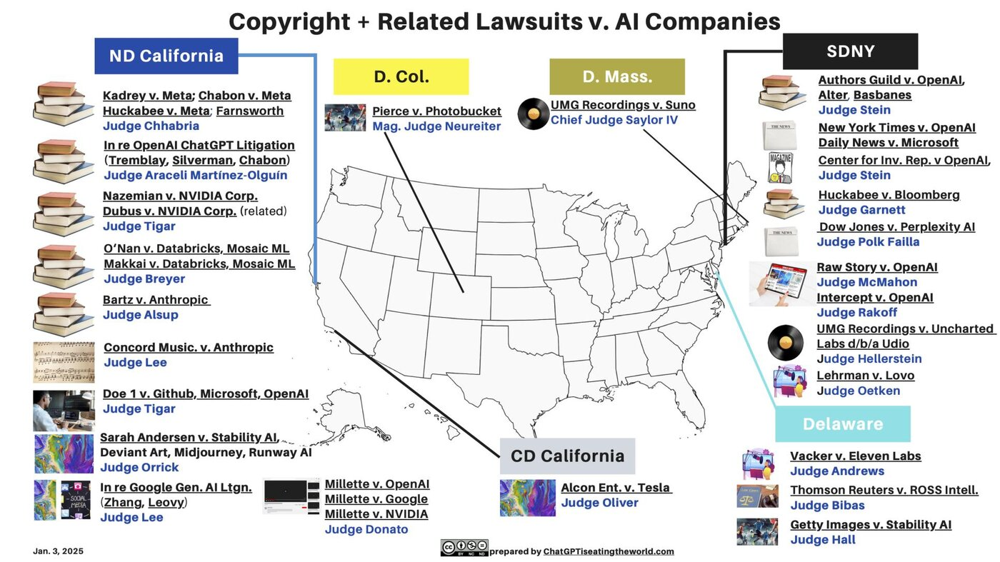
chatgptiseatingtheworld.com/2025/01/03/updated-map-of-copyright-lawsuits-v-ai-companies
AI와 저작권 관련 문제 개관
- 웹 크롤링 데이터의 수집과 복제: 저작권(복제권) 침해 여부
- 데이터베이스제작자의 권리 침해 여부
- 항변: 공정이용
- 학습 데이터 암기: 복제권 침해
- 캐릭터 생성: 복제권 침해
- 초상, 음성: 퍼블리시티권 침해
- 스타일 모방: 부정경쟁행위 여부
- AI 생성과 인간 창작의 구분
- AI를 도구로 쓴 결과물의 저작권 등록 가능 범위
- 별개의 권리를 새로 만들 것인지에 관한 입법론
학습 데이터의 수집
생성형 AI는 웹 크롤링 데이터로 학습한다. 수집 과정에서 복제권과 데이터베이스제작자의 권리가 문제 된다.
웹 크롤링 데이터: 언어모델의 주된 학습 데이터
- Common Crawl: 비영리 단체가 공개하는 웹 크롤링 데이터. GPT-3(2020) 학습 데이터 구성에서 60%의 비중
- 네이버 HyperCLOVA(2021): 네이버 블로그, 카페, 뉴스, 댓글, 지식iN 등 자사 서비스의 글을 주로 학습. 총 5,618억 토큰
- The Pile(2021): 언어모델 학습용 800GB 공개 데이터셋. 논문, 코드, 특허, 자막, 이메일 등 22개 출처
- 3강 실습에서 한 웹 스크래핑과 같은 행위를 대규모로 한 것이다
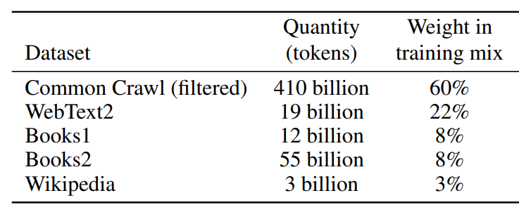
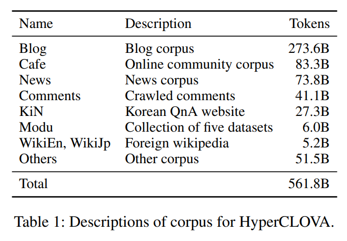
arxiv.org/abs/2005.14165 · arxiv.org/abs/2109.04650 · arxiv.org/abs/2101.00027 · commoncrawl.org
이미지 생성 AI의 학습 데이터: LAION-5B
- 웹 크롤링 데이터에서 이미지와 그 설명 텍스트의 쌍을 추출하여 학습 데이터로 활용
- LAION-5B(Schuhmann et al., 2022): 이미지-텍스트 쌍 58.5억 개. Stable Diffusion 학습에 사용됨
- robots.txt 규약에 따라 크롤링을 거부한 페이지는 수집하지 않음
- 데이터셋에는 이미지 파일이 아니라 이미지 URL과 설명 텍스트가 들어 있음. 학습하려는 자가 URL을 따라가 이미지를 내려받음
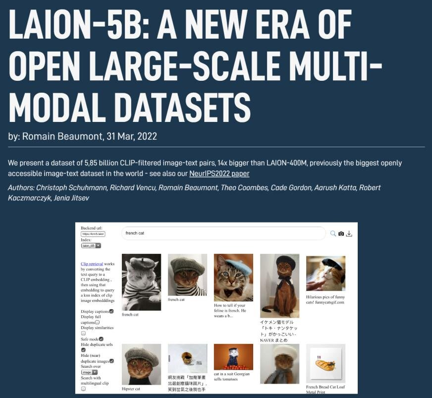
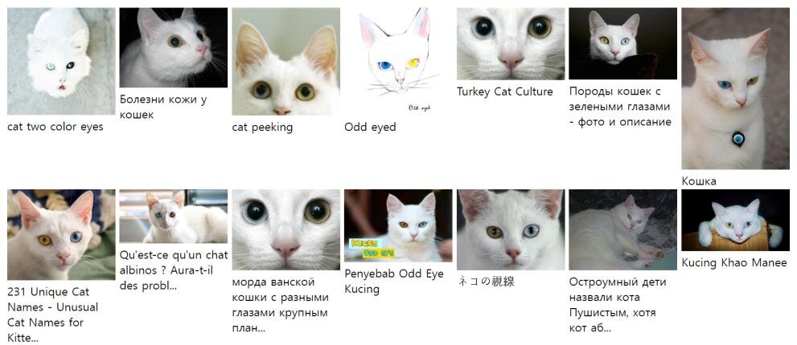
Getty Images v. Stability AI: 소장의 주장(2023, 미국)
- Getty Images의 데이터베이스에는 이미지마다 매우 상세한 설명이 붙어 있어 이미지 생성 모델 학습에 가치가 높음
- Stability AI가 LAION 데이터셋의 링크를 따라 Getty 웹사이트에 접속하여 수백만 장의 이미지와 설명 텍스트를 허락 없이 복제했다고 주장
- 웹사이트 이용약관이 그러한 행위를 명시적으로 금지하고 있었다는 점도 주장
“Stability AI followed links included in LAION’s dataset to access specific pages on Getty Images’ websites and copied many millions of copyrighted images and associated text. Such copying was done without Getty Images’ authorization and in violation of the express prohibitions against such conduct contained in its websites’ terms of use.”소장 제40항
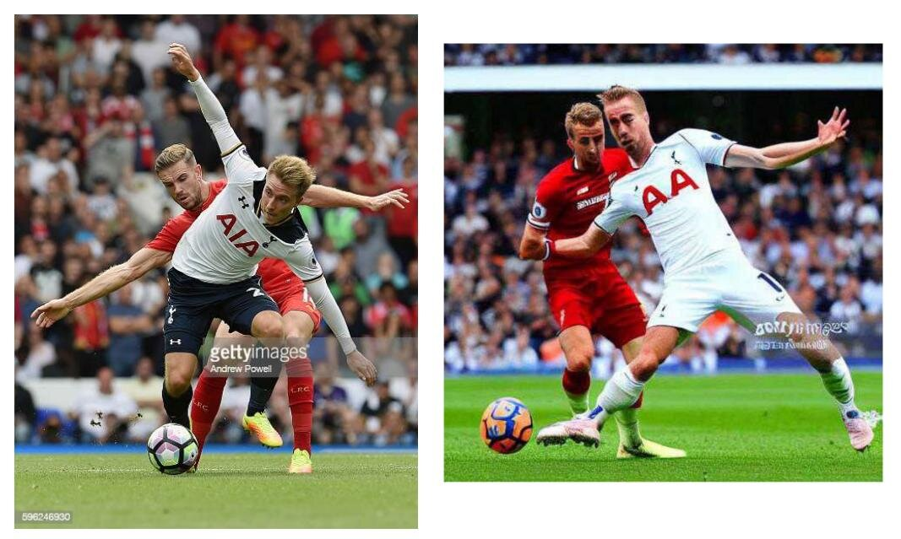
copyrightlately.com/pdfviewer/getty-images-v-stability-ai-complaint
크롤링 데이터 학습과 복제권 침해 가능성
- 복제의 의미
- 일시적 또는 영구적으로 유형물에 고정하거나 다시 제작하는 것
- 파일을 인터넷으로 전송받아 하드디스크에 저장하는 행위는 유형물에 고정하는 것에 해당 (2005도872)
- AI 학습 과정의 복제
- AI 개발자는 크롤링 데이터에 포함된 저작물의 복제본을 저장하고, 학습 과정에서 메모리에도 복제가 일어남
- 저작권자가 저작물을 웹에 게시했다는 사실만으로 AI 학습에 쓰는 것까지 허락했다고 보기는 어려움
- 일응 복제권 침해에 해당할 수 있다. 따라서 쟁점은 공정이용 등 저작재산권 제한 사유에 해당하는지로 넘어간다
데이터베이스제작자의 권리(DB권)
- 데이터베이스의 제작·갱신·검증·보충에 인적 또는 물적으로 상당한 투자를 한 자에게 인정되는 권리
- 데이터베이스를 구성하는 개별 소재의 저작권과 별개의 권리. 소재 자체가 저작물이 아니어도(가격, 주소, 채용 조건 등) 성립
- 데이터베이스의 전부 또는 상당한 부분을 복제·배포·방송·전송하면 침해
- 상당한 부분인지는 양적 측면과 질적 측면을 함께 고려 (2021도1533, 야놀자 사건)
- 개별 소재나 상당한 부분에 이르지 못하는 부분이라도 반복적이거나 특정한 목적을 위하여 체계적으로 복제하여 제작자의 이익을 부당하게 해치면 상당한 부분의 복제로 봄
- 저작물성이 없는 사실 정보만 수집하더라도 DB권 침해가 될 수 있다
20. “데이터베이스제작자”는 데이터베이스의 제작 또는 그 소재의 갱신ㆍ검증 또는 보충에 인적 또는 물적으로 상당한 투자를 한 자를 말한다.
② 데이터베이스의 개별 소재는 제1항에 따른 상당한 부분으로 간주되지 아니한다. 다만, (중략) 반복적이거나 특정한 목적을 위하여 체계적으로 함으로써 해당 데이터베이스의 일반적인 이용과 충돌하거나 데이터베이스제작자의 이익을 부당하게 해치는 경우에는 상당한 부분의 복제등으로 본다.
AI 학습과 공정이용
복제가 있다는 점은 다투기 어렵다. 쟁점은 그 복제가 공정이용으로 허용되는가이다. 2025년에 미국, 독일, 영국에서 첫 판결들이 나왔다.
공정이용의 항변
- AI 개발자는 공정이용(제35조의5)에 해당한다는 항변 제기
- 공정이용 판단 시 고려 요소
- 이용의 목적 및 성격
영리적인가? 변형적으로 이용했는가? - 저작물의 종류 및 용도
허구적·창작적인가? 사실적·기능적 저작물인가? - 이용 부분의 비중과 그 중요성
공중에 제공되는 분량은 얼마인가? - 저작물의 시장 또는 가치에 미치는 영향
원저작물의 수익 모델을 침해하는가?
- 이용의 목적 및 성격
② 저작물 이용 행위가 제1항에 해당하는지를 판단할 때에는 다음 각 호의 사항등을 고려하여야 한다.
1. 이용의 목적 및 성격
2. 저작물의 종류 및 용도
3. 이용된 부분이 저작물 전체에서 차지하는 비중과 그 중요성
4. 저작물의 이용이 그 저작물의 현재 시장 또는 가치나 잠재적인 시장 또는 가치에 미치는 영향
구글 북스(Google Books) 사건: 대량 복제와 변형적 이용
- 사실관계
- 구글은 2004년 12월 하버드, 스탠퍼드 등 대학 및 뉴욕 공립 도서관과 협약을 맺고 소장 도서를 스캔하여 데이터베이스를 구축하는 프로젝트를 발표
- 작가들의 허락은 얻지 않았고, 미국 작가협회(Authors Guild)가 2005년 저작권 침해 소송 제기
- 출판사협회는 2012년 수익 분배와 공개 분량 제한(20%)을 조건으로 구글과 합의
- 주장
- 작가협회: 상업적 목적이므로 공정이용이 아님
- 구글: 도서를 디지털 파일로 변형하여 이용자의 검색 편의를 높이는 것
- 2013년 11월 1심: 공정이용 인정
- 목적이 독자와 연구자에게 도서 검색의 편의를 제공하는 것
- 주된 대상이 소설보다 보호 필요성이 낮은 비소설
- 도서의 일부(snippet)만 열람 가능
- 책을 대체하지 않고 도서 가치의 재발견에 기여
- 2015년 10월 항소법원: 공정이용 인정
- 2016년 4월 연방대법원: 상고허가 신청 기각
- 책 전체를 복제하더라도 이용의 목적이 원저작물과 다르고(검색) 원저작물의 수요를 대체하지 않으면 공정이용이 될 수 있다. AI 개발사들이 가장 많이 원용하는 선례
비생성형 AI에 관한 종래의 논의: TDM 예외
- 검색, 분류, 통계 분석을 위한 비생성형 AI의 학습에 대해서는 저작물 이용을 허용하는 견해가 다수
- “저작물 본래의 목적 외 다른 목적, 예컨대 검색지원 또는 통계분석 등을 목적으로 하는 경우에 소위 변형적 이용(transformative use)으로 공정이용에 해당된다고 보는 견해들이 많다.” (정상조, 2018)
- 각국은 텍스트·데이터 마이닝(Text and Data Mining, TDM)을 허용하는 규정을 도입
| 국가 | 시기 | 내용 |
|---|---|---|
| 영국 | 2014년 저작권법 개정 | 비상업적 연구 목적의 TDM에 한하여 저작물 이용 허용 |
| 일본 | 2018년 저작권법 개정 | 저작물에 표현된 사상·감정의 향수를 목적으로 하지 않는 이용을 허용(제30조의4) |
| EU | 2019년 DSM 저작권 지침 | 연구 목적 TDM 예외(제3조)와 일반 TDM 예외(제4조). 일반 예외는 권리자가 기계가 읽을 수 있는 방식으로 유보(opt-out)하면 적용되지 않음 |
| 미국 | 별도 입법 없음 | 공정이용 법리의 해석으로 해결 |
| 한국 | 별도 입법 없음 | TDM 면책 규정을 신설하는 저작권법 개정안이 발의되었으나 입법되지 않음. 공정이용(제35조의5)의 해석 문제 |
10강에서 본 EU AI Act 제53조는 범용 AI 모델 제공자에게 위 opt-out을 식별하고 준수하는 정책을 갖출 의무를 부과한다.
Opt-In vs. Opt-Out
- 현행 국내법 및 법안
- 권리자 입장을 반영한 해석: 저작물을 AI 학습에 사용하기 위해서는 Opt-In 동의가 필요함
- 저작권법 개정안 태도: 권리자의 Opt-Out 여부를 불문하여 저작물의 AI 학습 허용
- Opt-Out 방안 도입 가능성을 검토할 필요
- 참고 입법례: 유럽연합 DSM 저작권 지침
- 과학적 연구 목적(제3조): Opt-Out 여부를 불문하고 AI 학습 허용
- 그 이외의 목적(제4조): 권리자가 Opt-Out 한 경우에는 AI 학습을 허용하지 않음 (robots.txt 등)
- 참고 입법례: 유럽연합 DSM 저작권 지침
제3조 과학적 연구 목적의 텍스트 및 데이터 마이닝(1) 회원국은 연구기관과 문화유산기관이 과학적 연구 목적으로 합법적으로 접근 가능한 저작물과 그 밖의 보호대상의 텍스트 및 데이터 마이닝을 수행하기 위하여 하는 복제와 추출을 위해 데이터베이스지침 제5조(a)와 제7조제1항, 정보사회저작권지침 제2조 그리고 이 지침 제15조 제1항에 규정된 권리에 대한 예외를 규정하여야 한다.
(2) 제1항에 따라 만들어진 저작물과 그 밖의 보호대상의 복제물은 적절한 수준의 보안을 갖추어 저장되어야 하며, 연구 결과의 검증을 포함한 과학적 연구 목적으로 보관될 수 있다.
(3) 권리자는 저작물과 그 밖의 보호대상이 호스팅되는 네트워크와 데이터베이스의 보안과 무결성을 보장하기 위한 조치를 적용할 수 있어야 한다. 그러한 조치는 그 목적을 달성하는 데 필요한 범위를 넘어서는 안 된다.
(4) 회원국은 권리자, 연구기관 및 문화유산기관이 제2항과 제3항에 규정된 의무와 조치의 적용에 관하여 공동으로 합의한 모범 관행을 정하도록 장려하여야 한다.
권리자의 유보에 관한 규정이 없음. 이 예외에 반하는 계약 조항은 집행할 수 없음(제7조 제1항)
제4조 텍스트 및 데이터 마이닝을 위한 예외와 제한(1) 회원국은 텍스트 및 데이터 마이닝을 목적으로 합법적으로 접근 가능한 저작물과 그 밖의 보호대상의 복제와 추출을 위해 데이터베이스지침 제5조(a)와 제7조제1항, 정보사회저작권지침 제2조, 컴퓨터프로그램지침 제4조 제1항(a)와 (b) 그리고 이 지침 제15조 제1항에 규정된 권리에 대한 예외와 제한을 규정하여야 한다.
(2) 제1항에 따라 만들어진 복제물과 추출물은 텍스트 및 데이터 마이닝 목적으로 필요한 한 보관될 수 있다.
(3) 제1항에 규정된 예외와 제한은 제1항에 언급된 저작물과 그 밖의 보호대상의 이용이 권리자에 의해, 콘텐츠가 온라인으로 공중에게 이용 제공되는 경우에 기계가독형 수단 등, 적절한 방법으로 명시적으로 유보되지 않았다는 것을 조건으로 적용되어야 한다.
(4) 이 조항은 이 지침 제3조의 적용에 영향을 미쳐서는 안 된다.
생성형 AI 확산 이후: 예외 확장에 대한 신중론
- 비생성형 AI는 저작물을 분석할 뿐 저작물과 경쟁하는 결과물을 내지 않았음
- 생성형 AI는 학습한 저작물과 같은 시장에서 경쟁하는 글, 그림, 음악을 만들어 냄. 공정이용의 네 번째 요소(시장 영향)에 대한 평가가 달라짐
- 영국 정부의 정책 변화
- 2022. 6. TDM 예외를 모든 목적(상업적 목적 포함)으로 확대할 계획 발표
- 2023. 2. 창작 산업계의 반발로 일반적 TDM 예외 계획 철회
- AI 학습을 위한 저작권 예외를 넓히는 데 각국이 조심스러운 입장으로 돌아섬
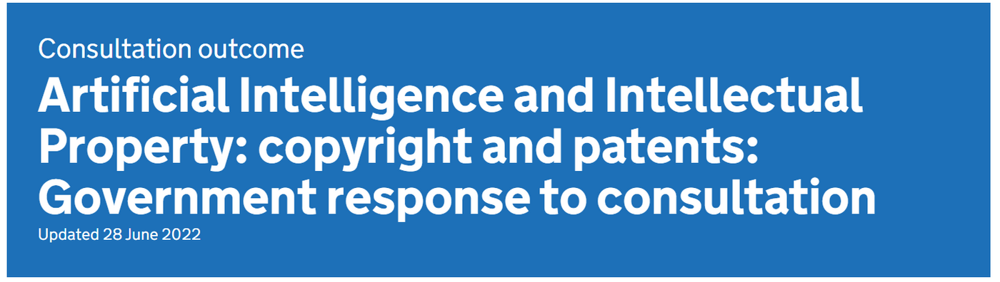
“For text and data mining, we plan to introduce a new copyright and database exception which allows TDM for any purpose. Rights holders will still have safeguards to protect their content, including a requirement for lawful access.”영국 정부, 2022. 6. (이후 철회)
Bartz v. Anthropic 1심 판결(미국, 2025. 6.)
- 미국 작가들이 Anthropic이 LLM(Claude) 학습에 자신들의 책을 무단으로 사용했다며 저작권 침해 소송 제기
- 2025년 6월 캘리포니아 북부지방법원이 공정이용에 관한 약식판결 선고. 법원은 Anthropic의 행위를 세 가지로 나누어 판단
| 행위 | 판단 | 이유 |
|---|---|---|
| 구매한 종이책을 스캔하여 중앙 라이브러리 구축 | 공정이용 인정 | 적법하게 취득한 책의 형식을 바꾼 것. 새로운 사본을 만들어 배포한 것이 아니므로 원저작물의 수요를 대체하지 않음 |
| 적법하게 취득한 책을 LLM 학습에 사용 | 공정이용 인정 | LLM 학습은 고도로 변형적인(transformative) 이용. 책을 읽고 배워 새로운 글을 쓰는 것과 같은 성격으로 평가 |
| 불법 사이트에서 내려받은 복제물로 라이브러리 구축 | 공정이용 부정 | 구매했어야 할 책을 무단으로 취득한 것은 원저작물에 대한 수요를 대체. 라이브러리 구축의 목적이 LLM 학습이었더라도 정당화되지 않음 |
학습 자체는 공정이용이지만, 학습 데이터를 어떻게 취득했는지가 결론을 갈랐다.
GEMA v. OpenAI 판결(독일, 2025. 11.)
- 사건 개요
- 독일 음악저작권 집중관리단체 GEMA가 OpenAI를 상대로 독일 노래 9곡의 가사에 관하여 침해정지, 정보제공, 손해배상 청구
- GPT-4와 GPT-4o를 해당 가사로 학습시켰다는 사실은 다툼이 없음
- ChatGPT는 간단한 프롬프트에도 가사의 상당 부분을 원문 그대로 출력
- 쟁점
- 가사가 모델 안에 기억(memorization)되어 있는가
- 그 기억과 출력이 “복제”에 해당하는가
- 뮌헨 제1지방법원 2025. 11. 11. 선고 42 O 14139/24
- 모델 내 기억은 복제: 가사가 확률값 형태로 여러 파라미터에 분산되어 있더라도 출력으로 재현할 수 있다면 모델 안에 고정된 것. 복제권(독일 저작권법 제16조) 침해
- 출력도 복제·공중송신: 단순한 프롬프트로 가사가 출력된 경우 책임은 이용자가 아니라 모델 운영자가 부담
- TDM 예외 부정: TDM 예외는 정보 분석을 위한 복제를 허용할 뿐, 저작물 자체를 모델 안에 기억시키는 복제까지 정당화하지 않음
- 침해정지, 정보제공, 손해배상 청구 인용. 변형된 가사 출력에 따른 인격권 침해 주장은 기각
- 현재 항소심 진행 중
모델 가중치 안에 저작물이 복제되어 있다고 본 판결. 암기가 입증되면 학습 단계의 예외 규정으로 방어하기 어렵다.
Getty Images v. Stability AI 판결(영국, 2025. 11.)
- 사건 개요
- Getty Images는 Stability AI가 Stable Diffusion을 학습시키면서 자사 사진을 무단으로 이용했다며 2023년 영국에서도 소송 제기
- 학습이 영국 밖에서 이루어진 것으로 드러나, Getty는 학습과 출력에 관한 직접침해 주장을 재판 중 철회
- 남은 쟁점: 해외에서 학습한 모델을 영국에 들여와 제공한 것이 “침해복제물(infringing copy)”의 수입·배포에 해당하는가 (영국 저작권법 CDPA 제22조, 제23조의 2차적 침해)
- 영국 고등법원 2025. 11. 4. 선고 [2025] EWHC 2863 (Ch)
- 모델 가중치는 학습으로 얻은 파라미터일 뿐, 학습 이미지를 저장하거나 재현하지 않음
- AI 모델은 저작물의 복제물을 담은 적이 없으므로 침해복제물이 아님. 2차적 침해 청구 기각
- 상표 침해: 구 버전(v1.x, v2.x)의 출력물에 Getty 워터마크가 나타난 일부 사례에 한하여 상표권 침해 인정
- 현재 항소심 진행 중
2025년 세 판결의 비교
| Bartz v. Anthropic (미국) | GEMA v. OpenAI (독일) | Getty v. Stability AI (영국) | |
|---|---|---|---|
| 저작물 | 서적 | 노래 가사 9곡 | 사진 |
| 모델 | LLM | LLM | 이미지 생성 모델 |
| 핵심 쟁점 | 학습을 위한 복제가 공정이용인가 | 모델 내 기억과 출력이 복제인가 | 모델이 침해복제물인가 |
| 적용 법리 | 공정이용(fair use) 일반 조항 | 복제권, TDM 예외 | 2차적 침해(수입·배포) |
| 결론 | 학습은 공정이용. 불법 복제물 취득은 침해 | 침해 인정. TDM 예외 적용 부정 | 저작권 청구 기각. 상표 침해 일부 인정 |
| 결정적 사정 | 데이터의 취득 경로 | 원문 그대로의 출력(암기) | 학습 장소가 영국 밖, 재현 미입증 |
- 세 판결 모두 1심이며 독일과 영국 사건은 항소심 진행 중. 확립된 법리로 보기는 이르다
- AI 사업자가 관리할 위험은 두 가지로 정리된다. (1) 학습 데이터를 적법한 경로로 취득했는가 (2) 모델이 학습 데이터를 그대로 출력하지 않는가
국내: 생성형 AI 저작권 안내서(2023. 12.)
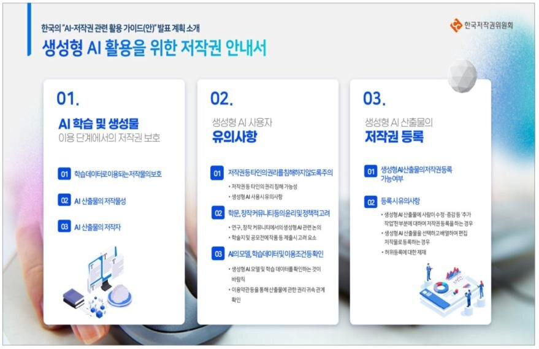
- 국내에는 AI 학습에 관한 법원 판결이 아직 없음. 정부 안내서가 실무 기준으로 쓰임
- AI 사업자에 대한 권고
- “AI 학습을 위한 것이라 하더라도 가급적 사전에 권리자와 별도 계약을 체결하는 등 적법한 이용권한을 확보하여 분쟁발생 가능성을 미연에 방지하는 것이 바람직”
- 권리자의 대응 현황
- 언론사를 포함한 다수 사이트가 공개 콘텐츠의 AI 학습 이용을 막는 내용을 약관에 넣거나 robots.txt로 크롤링을 차단
- AI 개발업체들이 언론사, 이미지 제공업체와 별도 계약을 체결하는 경향
- 공정이용 해당 여부에 대한 판단은 유보하고, 이용허락 확보를 권고하는 입장
문화체육관광부·한국저작권위원회, 「생성형 AI 저작권 안내서」 (2023. 12.)
학습 데이터 수집 경쟁
- 학습 데이터 규모가 지금 추세로 늘어나면 사람이 쓴 고품질 공개 텍스트는 2028년 무렵 고갈될 것으로 전망(Epoch AI)
- 대규모 모델 개발사들은 이미 새로운 데이터 출처를 찾고 있음
- OpenAI는 음성 인식 모델 Whisper로 유튜브 영상 100만 시간 이상을 받아 적어 GPT-4 학습에 사용했다고 보도됨(2024. 4.)
- 데이터 수집에 관한 지식재산권, 개인정보 보호 분쟁이 추가로 부각됨
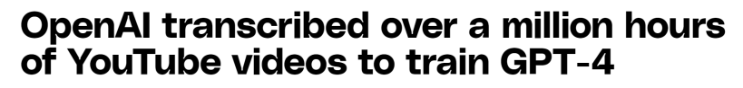
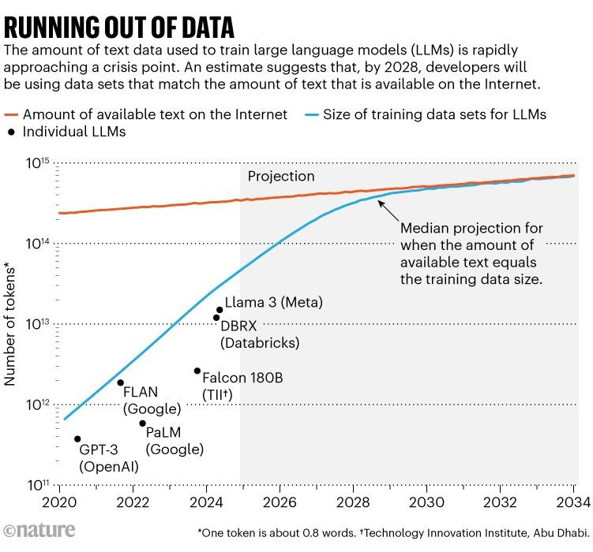
AI 개발사와 콘텐츠 제공사의 라이선스 계약
- 소송과 병행하여 AI 개발사가 콘텐츠 보유 기업과 직접 계약을 체결하는 사례가 늘어남
- OpenAI: AP(2023. 7.), Axel Springer(2023. 12.), Le Monde·Prisa(2024. 3.), Financial Times(2024. 4.), Reddit(2024. 5.)
- Google: News Corp(WSJ)과 AI 콘텐츠 계약, 연간 최대 600만 달러로 보도됨(2024. 5.)
- Reddit은 OpenAI와의 데이터 제공 계약 발표 후 주가가 급등(2024. 5.)
- 계약 유형: 학습용 데이터 제공, 실시간 검색 결과 인용(RAG), 출처 표시와 링크 제공
- 계약이 늘어난다는 사실 자체가 “AI 학습용 이용허락 시장”의 존재를 뒷받침한다. 공정이용의 네 번째 요소(시장 영향) 판단에서 권리자에게 유리한 사정이 될 수 있다
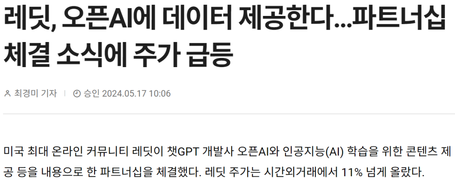
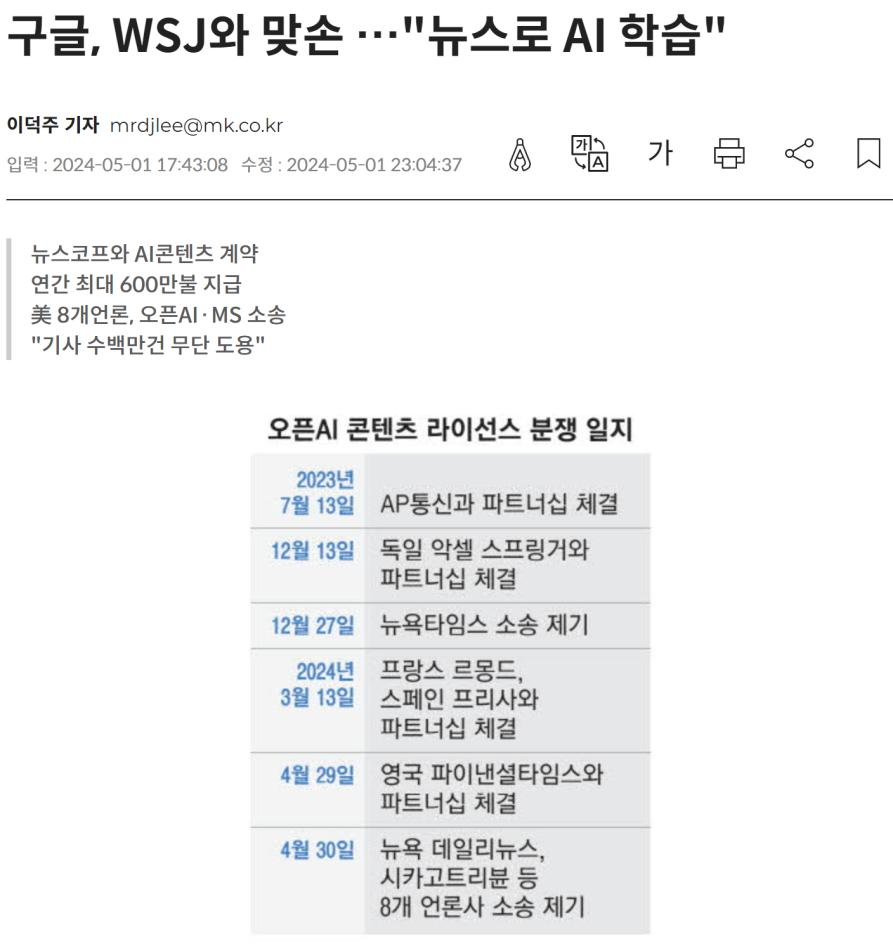
국제 경쟁 환경에 대한 고려
- 특정 국가만 저작물의 AI 학습을 허용하지 않는 제도를 유지한다면?
- 그 나라 AI 개발자는 다른 나라 개발자보다 추가 부담을 지게 되어 개발 경쟁에서 불리
- 국제적으로 쓰이는 AI가 그 나라 저작물만 빼고 학습하면 그 나라 이용자에게도 불리
- 지식재산권 규제 완화 경쟁(race to the bottom)은 불가피한가?
- 한국어 처리에 우수한 AI를 만들려면 국내 한국어 데이터 권리자에 대한 충분한 보상이 필요하다는 주장
- 국내 AI 개발사가 해외 개발사에 비해 비교우위를 유지할 수 있는 정책이 필요하다는 주장
- K-Culture 데이터 보호 강화가 국내 문화 산업 발전에 기여한다는 주장
- 국내법과 정책을 만들 때 이러한 주장을 어떻게 고려해야 하는가?
절충 방안: 데이터 거래 시장
- 지속 가능한 창작 생태계 유지
- 인간 창작자의 사회적 보호
거래 플랫폼
- 비표현적 이용 법리
- 공정이용 인정
- 권리자를 보호할 정책적 필요성은 일반적으로 인정됨. 그러나 지나친 권리자 보호는 AI 혁신 경쟁의 새로운 진입 장벽이 될 수 있음
- 대규모 라이선스 계약을 체결할 자금이 있는 기업만 학습 데이터를 확보하게 됨
- 실무상 어려움: AI 개발사가 라이선스를 받을 의사가 있어도 권리자가 누구인지, 조건과 로열티가 얼마인지 확인하기 어려움
- 데이터 거래 플랫폼의 역할: 권리자와 수요자를 연결하여 적정한 비용으로 라이선스를 취득하게 함. 스타트업에는 국가의 재정 지원도 가능
- 데이터를 거래하는 플랫폼이 장기적으로 성장해야 권리자 보호와 AI 혁신이 양립할 수 있다
AI 생성물에 의한 권리 침해
출력 단계의 네 가지 문제: 학습 데이터 암기, 캐릭터 생성, 초상·음성, 스타일.
(1) 학습 데이터 암기: 이미지 생성 모델
- 이미지 생성 모델은 학습 데이터의 원본 사진을 거의 같게 재현할 수 있음
- Carlini et al. (2023)
- Stable Diffusion에 인명(“Ann Graham Lotz”)을 프롬프트로 입력하자 학습 데이터에 있던 초상 사진과 “거의 동일한(nearly identical)” 이미지가 생성됨
- 학습 데이터에 여러 번 중복되어 들어간 이미지일수록 암기되기 쉬움
- 생성물이 학습 데이터의 저작물과 실질적으로 유사하면 복제권 침해가 성립할 수 있음
- GEMA 판결은 텍스트에 관하여 같은 논리로 침해를 인정
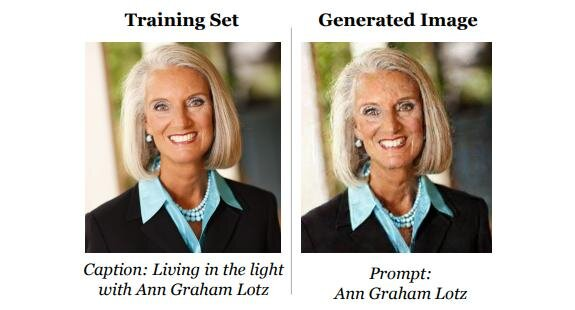
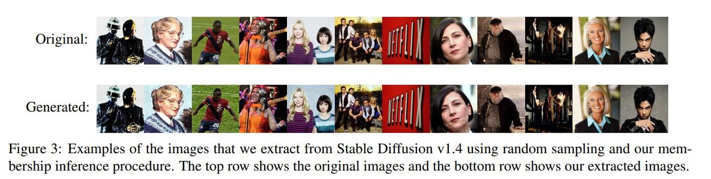
Carlini et al. (2023) Extracting Training Data from Diffusion Models, arxiv.org/abs/2301.13188
대규모 언어모델의 학습 데이터 암기
- 해리포터 소설의 첫 10단어를 입력하면 그 뒤 여러 쪽을 그대로 생성해 낼 수 있음
- 소설 도입부는 온라인 미리보기 등으로 널리 공개되어 학습 데이터에 여러 번 포함됨
- New York Times v. OpenAI (2023. 12. 제소)
- 소장 별지 Exhibit J에 GPT-4가 NYT 기사를 거의 그대로 출력한 사례 100건을 제시
- 기사 앞부분을 프롬프트로 주면 나머지 부분을 원문과 같게 이어서 생성. 붉은 글씨가 원문과 일치하는 부분
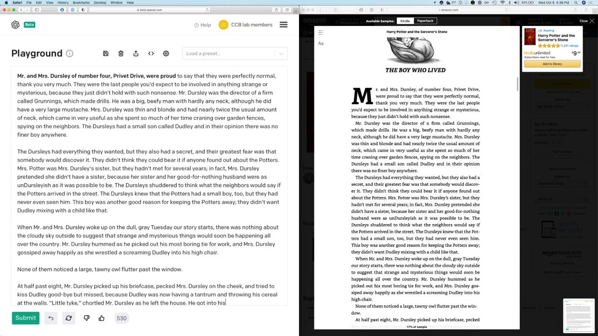
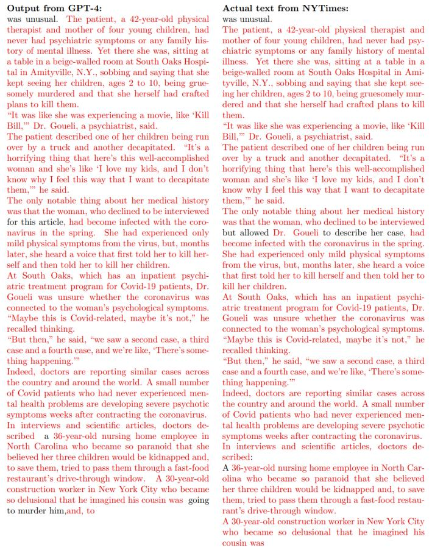
Callison-Burch (2023) Understanding Generative Artificial Intelligence and Its Relationship to Copyright · NYT v. OpenAI, Exhibit J
암기 위험의 크기: 측정과 반론
- 개발 과정에서 학습 데이터 암기 위험을 측정
- 학습 데이터와 동일한 결과물 생성: 0.2% 미만
- 유사한 결과물 생성: 약 1%
- 저작권 침해 위험 등을 고려하여 논문 발표 당시 모델을 공개하지 않음
- 반론
- 대부분의 AI 생성물은 학습 데이터의 저작물과 실질적으로 유사하지 않음. Getty 소장에 제시된 생성물도 원본 사진과 구도, 인물이 다름
- 학습 과정은 데이터를 분해(decomposition)하고 추상화(abstraction)함. 생성 모델은 학습 데이터를 암기하도록 설계되지 않음
- 암기는 드물게 발생하는 의도하지 않은 버그(Callison-Burch, 2023)
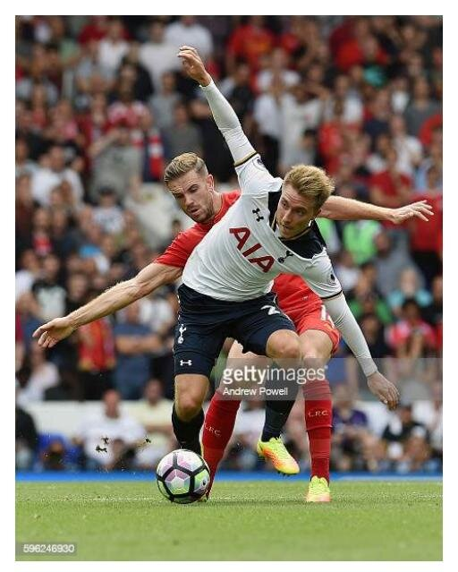
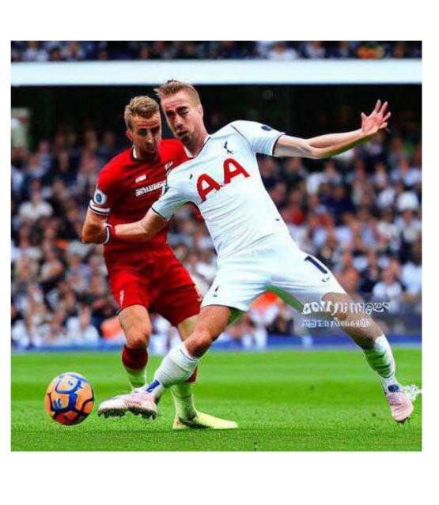
(2) 캐릭터 생성의 문제
- 캐릭터는 생김새, 동작 등의 시각적 표현에 창조적 개성이 드러나 있으면 원저작물과 별개로 저작물로 보호됨 (2007다63409)
- “스누피 문제”(Sag, 2023)
- 유명 캐릭터는 학습 데이터에 수많은 변형으로 반복 등장함. 모델은 개별 이미지가 아니라 캐릭터 자체를 학습
- 캐릭터 이름만 프롬프트에 넣어도 저작권을 침해하는 생성물이 쉽게 만들어짐
- 일부 창작자들은 디즈니가 AI 기업에 소송을 제기하기를 기대하며 미키 마우스, 피카츄 생성물을 일부러 게시(2022. 12.)
- 특정 사진의 암기와 달리 구조적으로 발생하는 문제. 프롬프트 필터링 같은 별도 조치가 필요
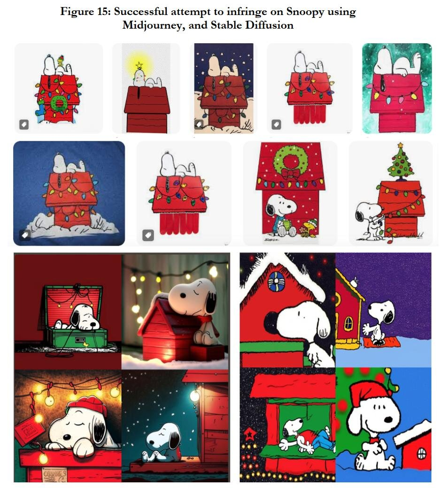
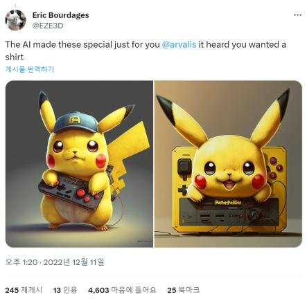
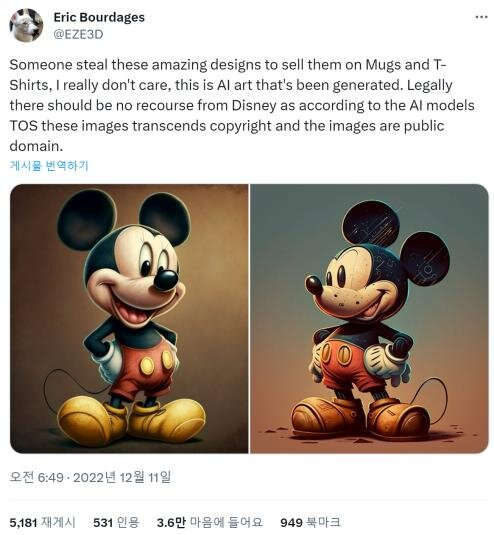
Matthew Sag (2023) Copyright Safety for Generative AI · dailydot.com/debug/ai-art-protest-disney-characters-mickey-mouse
(3) 초상·음성 등 인격표지 침해
- 생성형 AI는 유명인의 초상과 음성을 그대로 재현할 수 있음
- Midjourney: “photo of Snoop Dogg standing next to a red dog house with Christmas lights on it”
- Snoop Dogg의 음성으로 텍스트를 읽어 주는 TTS 서비스
- 스칼릿 조핸슨과 GPT-4o 음성(2024. 5.)
- OpenAI가 GPT-4o 음성 “Sky”를 공개하자, 조핸슨이 자신의 목소리와 매우 비슷하다며 문제 제기
- 조핸슨은 OpenAI의 음성 출연 제안을 거절한 바 있다고 밝힘. OpenAI는 해당 음성 사용을 중단
- 초상과 음성은 저작물이 아니므로 저작권으로 보호되지 않는다. 퍼블리시티권 침해가 문제 된다
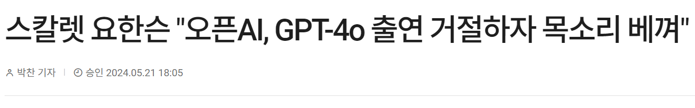
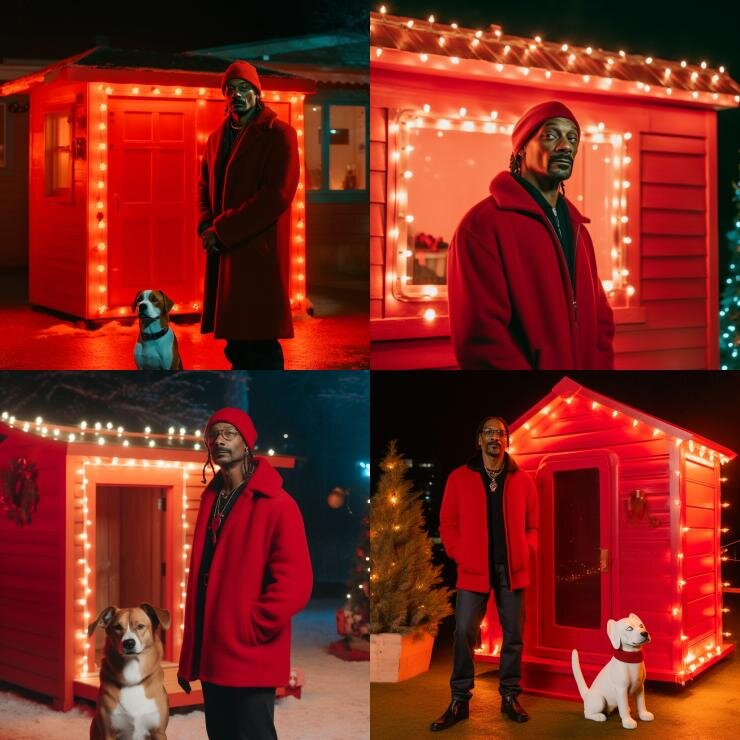
Callison-Burch (2023) · AI타임스, 2024. 5.
한국법상 퍼블리시티권 보호
- 종래: 실정법에 퍼블리시티권의 근거 조항이 없었고, 하급심 판결은 인정한 사례와 부정한 사례로 나뉨
- 부정경쟁방지법 개정(2021년): 유명인의 식별표지를 무단 사용하는 행위를 부정경쟁행위로 규정
- 요건: 국내에 널리 인식되고 경제적 가치를 가지는 표지, 자신의 영업을 위한 무단 사용, 경제적 이익 침해
- 유명하지 않은 일반인의 초상·음성에는 적용되지 않음
- 법무부 민법 개정안: 모든 사람에게 인격표지영리권을 인정하는 규정을 신설하는 안
- 자신의 성명, 초상, 음성 그 밖의 인격표지를 영리적으로 이용할 권리
- 딥페이크 영상의 표시 의무는 10강(EU AI Act 제50조, 인공지능 기본법 투명성 의무)에서 다룬 별도의 규율. 기술적 대응은 Section 6에서 다룸
제3조의3(인격표지영리권) ① 사람은 자신의 성명, 초상, 음성 그 밖의 인격표지를 영리적으로 이용할 권리를 가진다.
(4) 스타일 모방
- 이미지 생성 모델은 프롬프트에 작가 이름을 넣으면 그 작가의 화풍으로 그림을 생성함
- 만화가 Sarah Andersen의 기고(NYT, 2022. 12.): 자신의 이름을 프롬프트로 넣자 자신의 그림체를 닮은 만화가 생성됨
- 저작권법의 한계
- 저작권법이 보호하는 것은 말, 문자, 음, 색 등으로 구체적으로 외부에 표현한 창작적인 표현형식
- 아이디어, 이론 등 사상과 감정 그 자체는 독창성과 신규성이 있어도 보호 대상이 아님
- 작품의 스타일 자체는 저작권 보호 대상으로 인정받기 어렵다. 특정 작품과 실질적으로 유사한 경우에만 침해
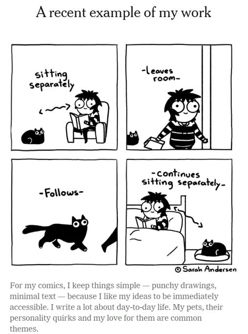
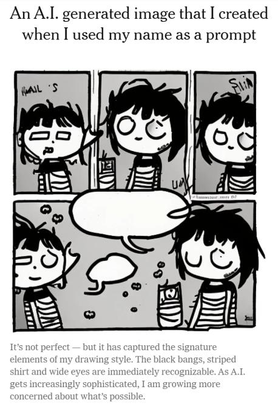
nytimes.com/2022/12/31/opinion/sarah-andersen-how-algorithim-took-my-work.html
스타일의 보호 가능성: 부정경쟁방지법 성과도용
- 2013년 개정으로 신설된 보충적 일반조항. 기술 변화로 나타나는 새로운 유형의 부정경쟁행위에 대응하려는 취지
- BTS 화보집 사건(2019마6525)의 판단 기준
- 성과 등: 유형물뿐 아니라 무형물도 포함. 종래 지식재산권법으로 보호받기 어려웠던 새로운 형태의 결과물도 포함
- 상당한 투자나 노력: 해당 산업 분야의 관행과 실태에 비추어 구체적, 개별적으로 판단. 공공영역(public domain)에 속하지 않을 것
- 공정한 상거래 관행이나 경쟁질서에 반하는 방법인지는 다음을 종합
- 권리자와 침해자가 경쟁관계에 있거나 가까운 장래에 놓일 가능성
- 해당 산업 분야의 상거래 관행과 경쟁질서의 내용
- 침해자의 상품·서비스에 의한 시장 대체 가능성
- 수요자에게 성과 등이 알려진 정도, 혼동 가능성
기술적·상업적 대응
법적 결론이 확정되기 전에 AI 사업자들은 침해 위험을 줄이는 기술적 조치와 이용자에 대한 계약상 보장을 내놓고 있다.
생성 AI의 저작권 안전을 위한 기술적 방안
| 구분 | 단계 | 제안 |
|---|---|---|
| 생성 모델 일반 | 학습 | 1. 학습 데이터 내 저작물 중복 제거 |
| 설계 | 2. 학습 데이터 규모를 고려한 모델 용량의 선택 | |
| 학습 | 3. 저작권, 상표권, 퍼블리시티권, 개인정보 보호를 위한 인간 피드백 강화학습(RLHF) 도입 | |
| 활용 | 4. 모델 출력 필터링, 제한 등 저작권 침해 방지 조치 | |
| 모델 배포 | 5. 심각한 저작권 침해 위험을 초래하는 모델의 오픈소스 공개 금지 | |
| 학습 | 6. 학습 데이터로 사용된 저작물과 그 출처에 대한 상세한 기록 유지 | |
| 이미지 생성 모델 | 학습 | 7. 이미지 설명 중 고유명사(지명 등) 식별성 높은 묘사를 삭제 또는 일반화 |
| 학습 | 8. 이미지 설명 중 창작자 이름, 상표, 캐릭터 명칭 등을 삭제 또는 일반화 | |
| 활용 | 9. (8의 대안으로) 특정 창작자 이름, 상표, 캐릭터 명칭 프롬프트 불허 | |
| 학습/활용 | 10. 워터마크가 포함된 저작물을 학습 데이터에서 제거, 워터마크 생성을 막는 RLHF와 출력 필터 적용 |
1·2번은 암기, 8·9번은 캐릭터와 스타일, 3·4번은 초상·음성, 6번은 학습 데이터 취득 경로의 입증에 대응한다.
Matthew Sag (2023) “Copyright Safety for Generative AI”
복습: 사후학습과 인간 피드백을 이용한 강화학습 (RLHF)
- 사전학습 (pre-train) 단계: 잠재적으로 개인정보, 편향, 유독한 데이터를 모두 포함하여 학습
- 사후학습 (post-train) 단계: 위법·부적절한 표현이 생성되지 않도록 추가로 학습(조향, steering)
- ① 미세조정: 인간이 직접 작성한 (입력, 출력) 쌍으로 지도 학습
- ② 보상 모델 학습: 여러 출력 중 어느 것이 좋은지 인간이 점수를 매기고, 이를 예측하는 별도의 모델을 학습
- ③ 강화학습: 언어모델이 보상 모델로부터 높은 점수를 받도록 스스로 파라미터를 업데이트
- GPT-3.5는 GPT-3와 동일한 구조와 규모이나, 추가적인 조향을 거쳐 성능 및 안전성이 크게 개선됨
- 2강에서 본 RLHF를 저작권 침해 출력의 억제에 쓴다. 저작물을 그대로 출력하거나 특정 캐릭터, 유명인의 초상을 생성하는 답변에 낮은 점수를 주면 모델이 그러한 출력을 피하도록 조정된다(앞의 표 3번)
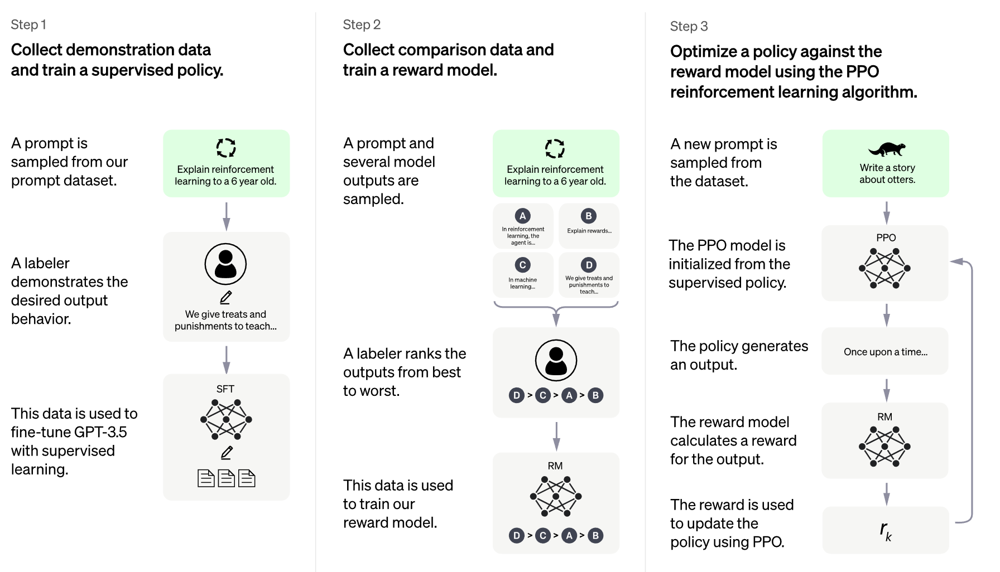
상업적 대응 (1): 권리가 확보된 데이터로만 학습
- Adobe Firefly
- Adobe가 이용 권한을 가진 Adobe Stock 이미지, 공개 라이선스 저작물, 저작권이 만료된 퍼블릭 도메인 콘텐츠로 학습
- “상업적으로 안전하게 사용”할 수 있다는 점을 제품의 차별점으로 제시
- Adobe Stock 기고자에 대한 보상 모델을 함께 발표
- Getty Images, Shutterstock도 자사 보유 이미지로 학습한 생성 모델을 출시
- 학습 데이터의 권리 관계가 깨끗하다는 점이 기업 고객에게 판매할 수 있는 품질 요소가 됨
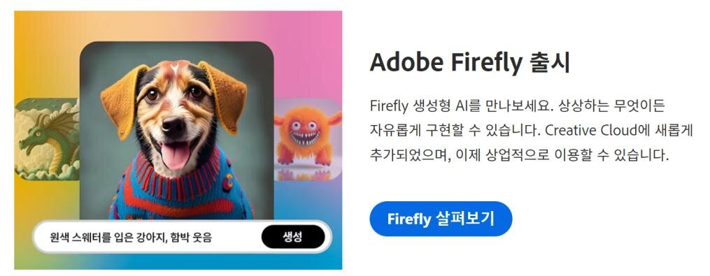
상업적 대응 (2): 이용자에 대한 IP 면책(indemnification)
- 면책 약정: 이용자가 AI 생성물 때문에 제3자로부터 지식재산권 침해 청구를 받으면 AI 사업자가 방어하고 배상액을 부담하겠다는 계약상 약속
- Adobe: Firefly 기업 고객에게 생성물에 대한 IP 면책 제공
- Microsoft(2023. 9.): Copilot Copyright Commitment. 유료 Copilot 이용자가 생성물로 저작권 소송을 당하면 방어와 배상을 부담
- Google(2023. 10.): 학습 데이터에 대한 면책에 더해 생성물에 대한 면책으로 확장
- 면책의 조건과 한계
- 대체로 유료 기업 고객에 한정
- Adobe 약관: 이용자가 출력물을 수정한 경우, 다른 자료와 결합한 경우, 고객 계약을 위반하여 사용한 경우, 중단 통지 후 사용한 경우는 제외
- Microsoft: 제품에 내장된 필터와 안전장치를 사용하고, 침해를 의도한 입력을 하지 않을 것이 조건
- 기업이 생성형 AI를 도입할 때 약관의 면책 조항과 제외 사유를 확인해야 한다
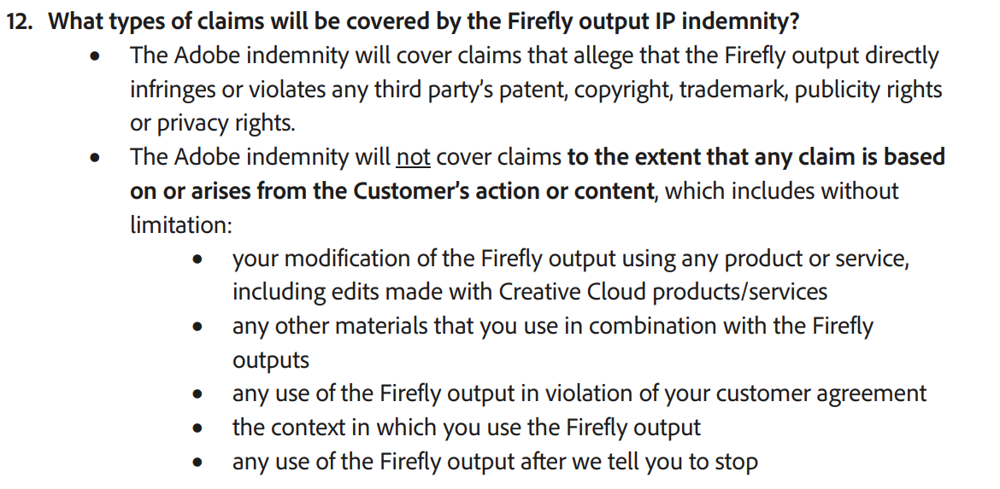
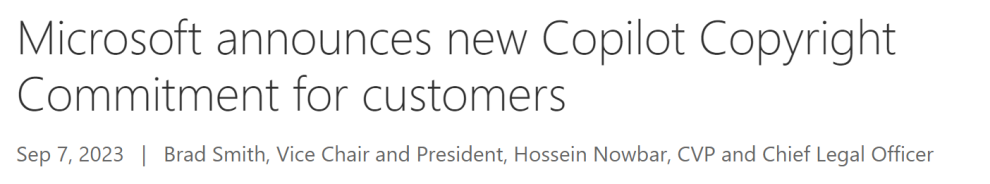
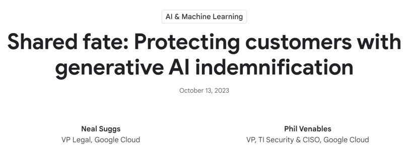
Microsoft, 2023. 9. 7. · Google Cloud, 2023. 10. · Adobe Firefly for Enterprise
AI 창작물과 저작권
AI로 만든 결과물은 저작권으로 보호되는가. 누가 저작자인가. 미국과 한국의 등록 실무를 본다.
AI 창작물은 저작권 보호 대상인가
- Théâtre D’opéra Spatial (2022)
- Jason Allen이 Midjourney로 만든 그림이 미국 콜로라도 주립 박람회 미술대회 디지털 아트 부문에서 1위 수상
- 창작자는 최소 624회 프롬프트를 입력하고 Photoshop으로 보정했다고 주장
- 미국 저작권청은 등록 거절. Allen v. Perlmutter 소송 계속 중
- 프롬프트를 여러 번 고쳐 쓰고 후보정을 거치면 저작권 보호 대상이 되는가?
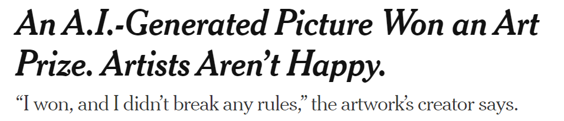
nytimes.com/2022/09/02/technology/ai-artificial-intelligence-artists.html
AI가 만든 그림과 글이 거래될 때
- Edmond de Belamy
- 프랑스 예술가 그룹 Obvious가 GAN으로 생성한 초상화
- 2018년 10월 크리스티 경매에서 432,500달러에 낙찰
- 1 the Road (2018): 자동차에 단 카메라, GPS, 마이크의 입력을 받아 AI가 쓴 소설로 출간
- 중국 선전시 난산구 법원(2020. 1. 보도): 텐센트의 AI “Dreamwriter”가 작성한 기사를 무단 전재한 업체에 배상 명령. AI가 쓴 글도 저작권 보호 대상이 될 수 있다고 판단
- 경매의 최종 구입자는 무엇을 산 것인가? 저작권인가, 출력물의 소유권인가?
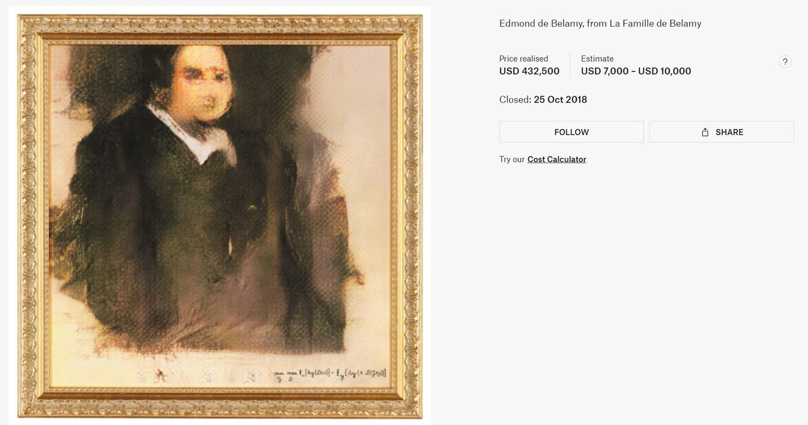
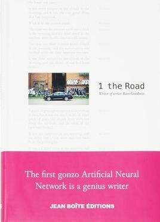
christies.com · en.wikipedia.org/wiki/1_the_Road · 연합뉴스, 2020. 1. 9.
미국 (1): A Recent Entrance to Paradise 사건
- 2018. 11. 3. 스티븐 탈러(Stephen Thaler)가 저작권 등록 신청
- 저작자: “창작 기계(Creativity Machine)”
- 신청자의 지위: “기계의 소유자”
- 신청서에 해당 저작물이 “기계에서 구동되는 컴퓨터 알고리즘에 의해 자율적으로 창조”되었다고 기재
- 2019. 8. 12. 미국 저작권청 등록 거절: 인간에 의한 창작물이 아님
- 2019~2022저작권청 거절, 재심에서도 유지
- 2023. 8.1심 법원: 거절 처분 적법
- 2025. 3.연방항소법원: 항소 기각
- 2026. 3. 2.연방대법원: 상고허가 거부(확정)
사람의 관여가 전혀 없다고 스스로 밝힌 AI 생성물은 저작물이 아니다. 미국에서 확정된 결론.
copyright.gov/rulings-filings/review-board/docs/a-recent-entrance-to-paradise.pdf
미국 (2): Zarya of the Dawn 사건
- 작가 Kris Kashtanova가 글을 쓰고 Midjourney로 그림을 생성하여 만든 만화책
- 2022. 9. 15. 저작권 등록 승인
- 2022. 10. 28. 저작권청이 AI 도구 활용 여부에 대한 소명자료 요구
- 2023. 2. 21. AI가 생성한 그림을 제외하고 새 등록증 발급 통지
| 등록 범위 | (1) 텍스트(어문저작물) (2) AI로 생성된 그림을 선택, 조정, 배열한 것(편집저작물) |
| 제외 범위 | AI가 생성한 개별 그림 |
사람이 만든 부분과 AI가 만든 부분을 나누어, 사람이 기여한 부분에만 저작권을 인정하는 방식.
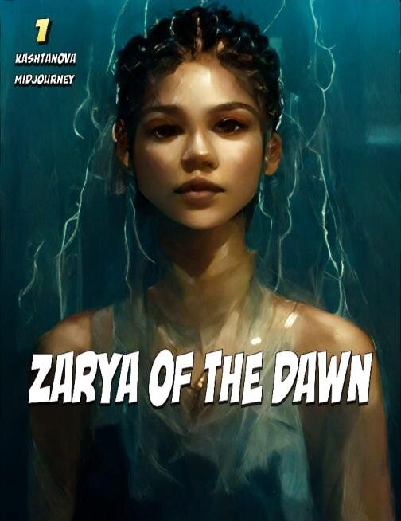
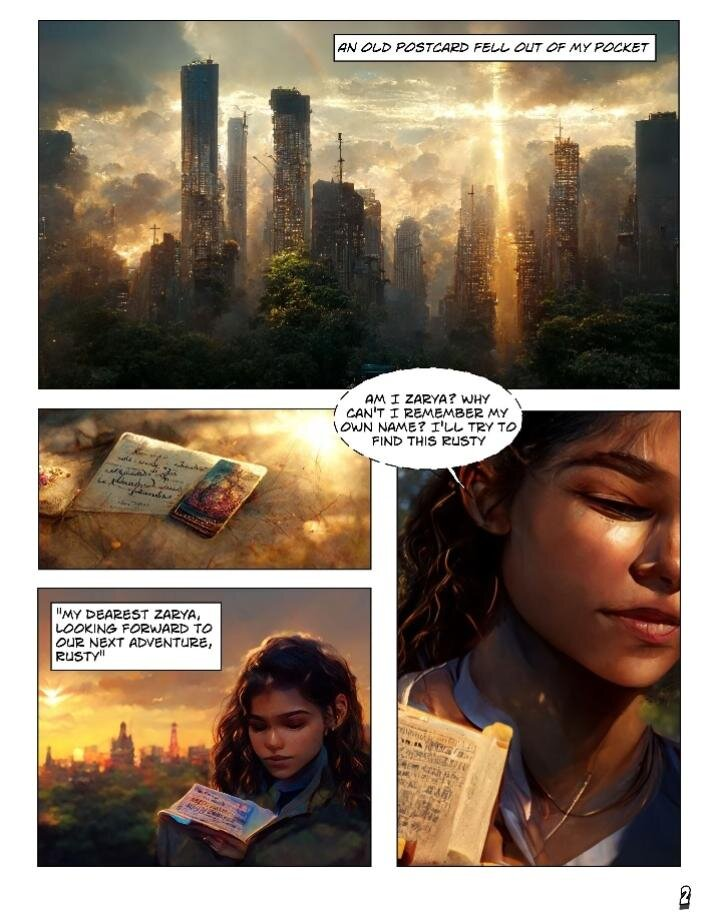
Zarya 사건: 개별 이미지를 제외한 이유
- 생성형 AI의 작동 방식
- 기존의 예술가, 작가, 사진가의 창작 과정과 같지 않음
- 이용자는 Midjourney가 무엇을 생성할지 예측할 수 없으므로 결과를 통제한다고 볼 수 없음
- 이미지를 생성한 실행 주체는 Midjourney
- 이용자가 직접 조작하는 Adobe Photoshop 같은 컴퓨터 기반 도구와 구별됨
- 후보정 주장
- 신청인은 입술과 입의 렌더링을 Photoshop으로 수정했다고 주장했으나, 그 수정이 미미하여 신청인이 기여한 표현과 Midjourney가 생성한 이미지가 구분되지 않음
- 기준은 프롬프트에 들인 노력의 양이 아니라, 표현 요소를 사람이 결정했는지 여부
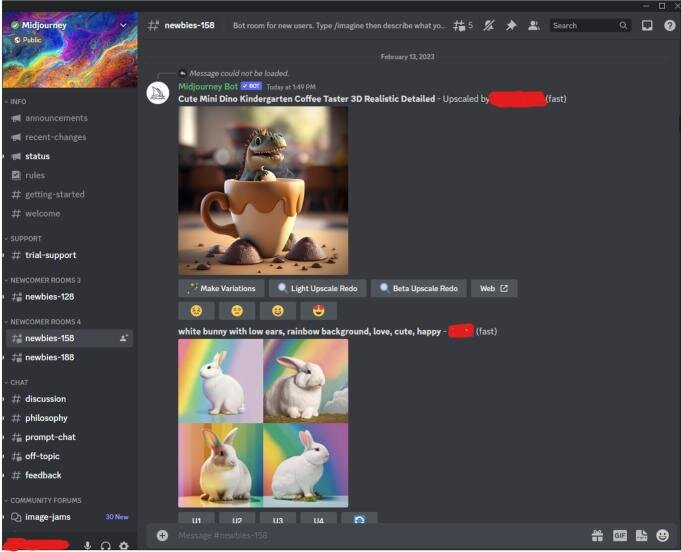
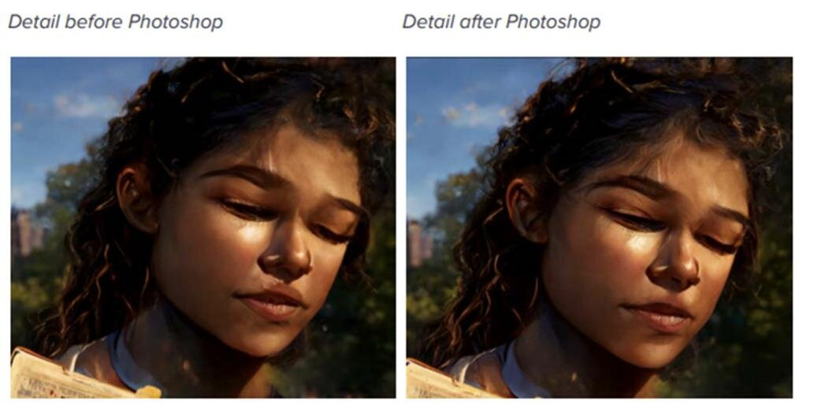
미국 저작권청의 등록 지침과 AI 보고서
- AI 생성물 저작권 등록 지침(2023. 3. 16.)
- 인간 저작자 요건(Human Authorship Requirement): 인간의 창조적 개입 없이 임의로 또는 자동으로 작동하는 기계가 만든 생성물은 등록하지 않음
- 판단 기준: 저작물이 기본적으로 인간 저작의 결과물이고 컴퓨터는 보조 도구인가, 표현의 전통적 요소(문학적·예술적·음악적 표현, 선택, 배열)를 기계가 구상하고 실행했는가
- 인간이 AI 생성물을 선택, 배열하거나 수정했다면 그 부분에 한정하여 저작권 인정
- 신청자는 작품에 AI 생성물이 포함된 사실을 기재하고 인간이 기여한 부분을 설명해야 함
- AI 보고서 Part 2: Copyrightability (2025. 1. 29.)
- 현 기술 수준에서는 프롬프트만으로는 이용자를 AI 산출물의 저작자로 만들 만큼 인간의 통제가 충분하지 않음
- 프롬프트는 지시에 가깝고, 같은 프롬프트로도 매번 다른 결과가 나옴
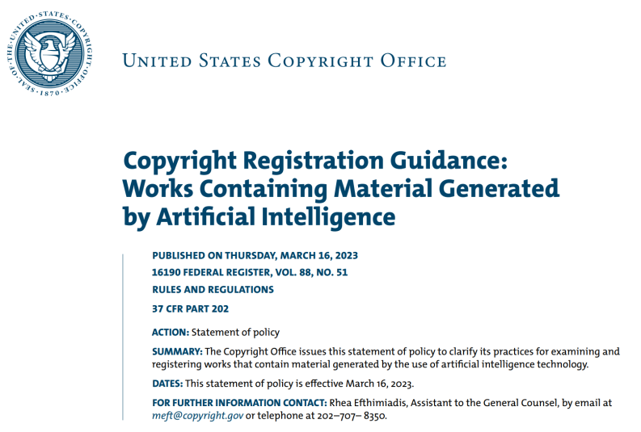
한국: 종전 실무와 저작권 등록 안내서(2025. 6.)
- 종전 실무(2022. 11.): 저작권 등록 신청 절차에서 AI 창작물은 등록 대상으로 받지 않음. 등록 신청명세서에 “인공지능(AI) 창작물은 등록대상이 아닙니다”라고 안내
- 「생성형 인공지능 활용 저작물의 저작권 등록 안내서」(2025. 6.)
- 인간이 창작 과정에서 생성형 AI를 도구로 활용하여 만든 결과물로서 인간의 창작적 기여가 인정될 수 있는 부분이 있는 것은 등록 가능
- 등록 가능한 세 가지 경우
- ① 이용자가 자신의 저작물을 프롬프트로 입력하여, 생성된 결과물에 그 저작물의 창작성이 나타난 경우
- ② 이용자가 AI 산출물을 수정·증감하는 등 추가 작업한 부분에 창작성이 있는 경우
- ③ AI 산출물을 선택하고 배열 또는 구성한 것에 창작성이 있는 경우
- 미국과 같은 방향. AI 산출물 자체는 등록 대상이 아니고, 인간이 기여한 부분만 등록
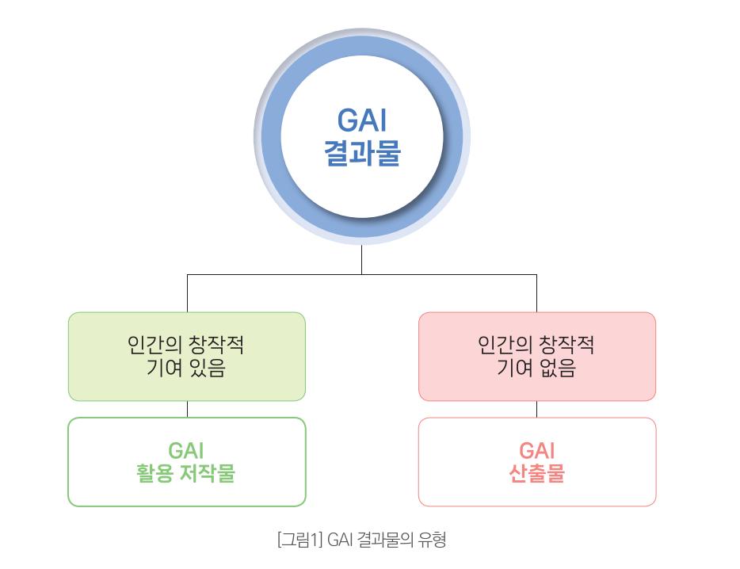
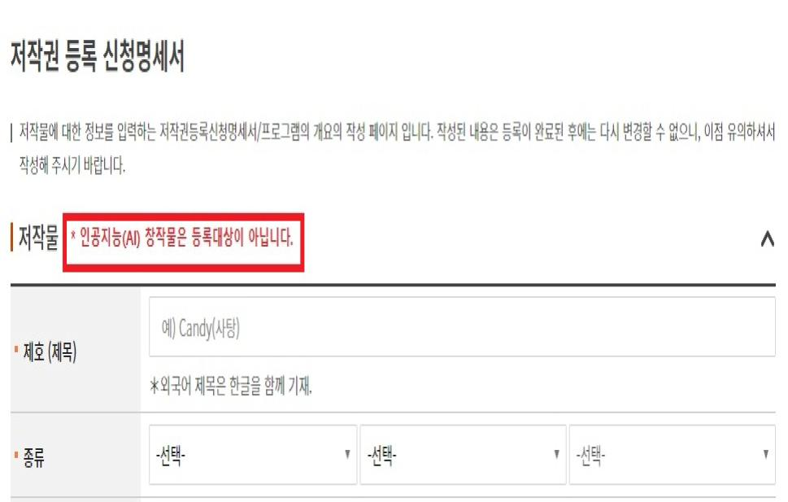
문화체육관광부·한국저작권위원회, 「생성형 인공지능 활용 저작물의 저작권 등록 안내서」 (2025. 6.)
GAI 활용 저작물 등록 사례 (1)
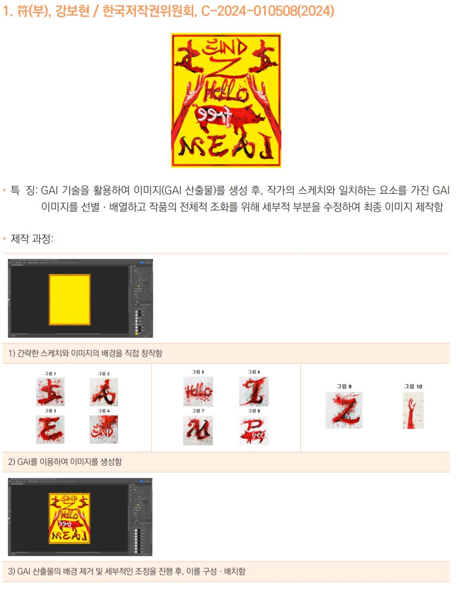
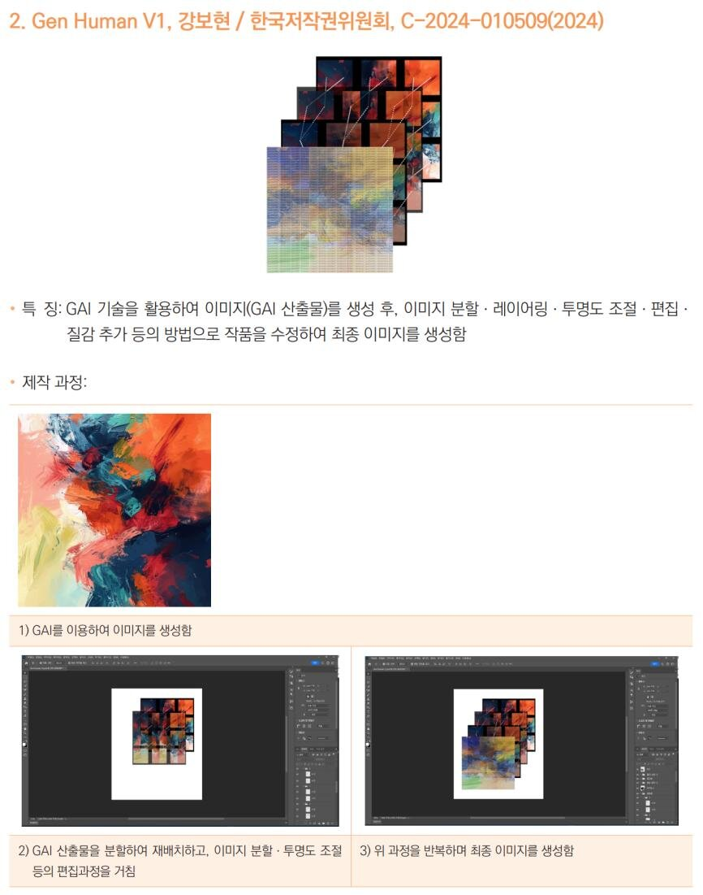
왼쪽 「符(부)」: 배경을 직접 그리고, GAI 산출물 가운데 스케치와 맞는 요소를 선별·배열한 뒤 세부를 수정. 오른쪽 「Gen Human V1」: GAI 산출물을 분할, 레이어링, 투명도 조절, 질감 추가로 수정. 두 사례 모두 사람이 추가 작업한 부분의 창작성이 인정됨.
문화체육관광부·한국저작권위원회, 「생성형 인공지능 활용 저작물의 저작권 등록 안내서」 (2025. 6.)
GAI 활용 저작물 등록 사례 (2)
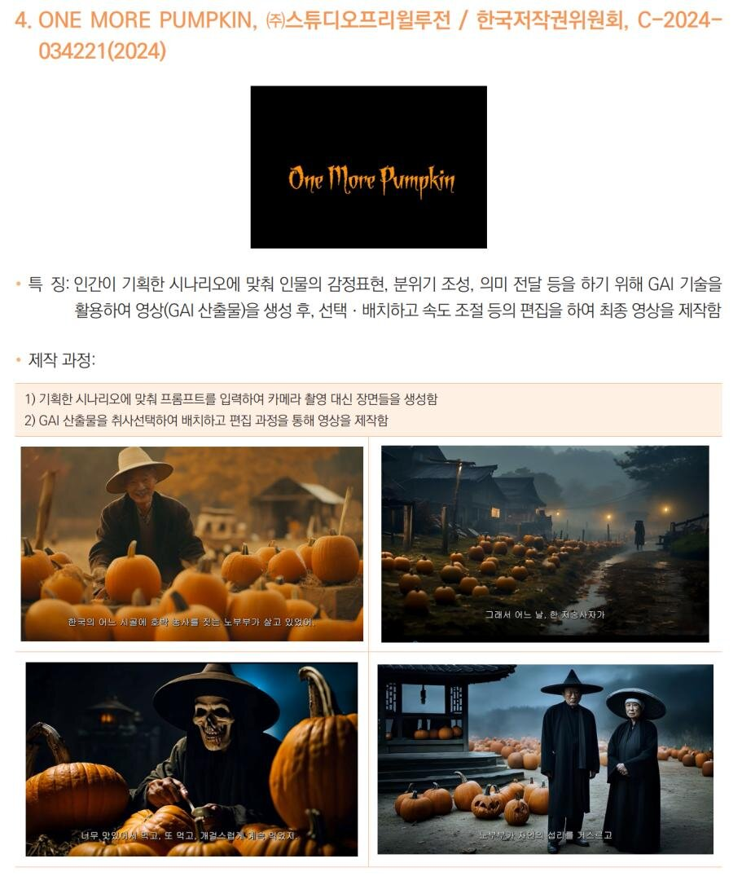
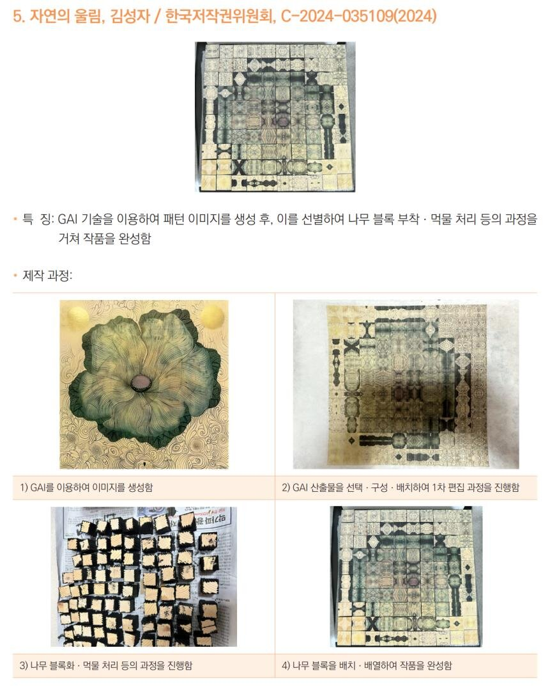
왼쪽 「ONE MORE PUMPKIN」: 사람이 기획한 시나리오에 맞춰 GAI로 장면을 생성하고, 취사선택·배치·편집하여 영상을 제작. 오른쪽 「자연의 울림」: GAI로 만든 패턴 이미지를 선별하여 나무 블록에 붙이고 먹물 처리를 거쳐 완성. 개별 산출물이 아니라 선택, 배열, 추가 작업 부분이 등록 대상.
문화체육관광부·한국저작권위원회, 「생성형 인공지능 활용 저작물의 저작권 등록 안내서」 (2025. 6.)
AI 생성물의 보호 공백과 실무상 함의
- 사람의 창작적 기여가 없는 AI 산출물은 저작물이 아님
- 경쟁사가 그대로 가져다 써도 저작권 침해를 주장할 수 없음
- 마케팅 이미지, 광고 문구, AI가 작성한 코드에 모두 해당
- 사람이 수정, 선택, 배열한 과정을 기록으로 남김(프롬프트, 중간 산출물, 편집 이력)
- 핵심 자산은 사람의 창작적 기여가 드러나도록 제작
- 저작권 외의 수단 활용: 계약, 영업비밀, 상표, 부정경쟁방지법 성과도용
- AI 산출물에 저작권보다 약한 별도의 권리를 부여하자는 견해
- 보호 기간 단축, 등록 요건, 투자자 보호 방식 등이 논의됨
- 반론: 생성 비용이 낮은 산출물에 독점권을 줄 유인 근거가 약함
딥페이크와 이용자 보호
AI 생성물이 권리자가 아니라 이용자와 사회 일반에 주는 피해. 정보 조작 우려와 피해 사례, 그리고 콘텐츠 투명성을 위한 세 가지 기술적 접근을 본다.
AI와 정보 조작 우려
| 우려 | 설명 | 예시 |
|---|---|---|
| 거짓말쟁이의 배당 (Liar’s dividend) | 딥페이크 기술로 인해 실제 증거도 “가짜”라고 주장하며 부정할 수 있게 되어 책임성과 진실성이 훼손됨. 공신력 있는 정보에 대한 신뢰를 약화시키고, 검증된 정보조차 의심하는 환경을 조성 | 도널드 트럼프와 지지자들이 카멀라 해리스 집회 군중 사진이 AI로 조작됐다고 허위 주장 |
| 협박 (Blackmail) | AI로 제작된 조작 콘텐츠(딥페이크 포함)가 성적 착취, 금전 갈취, 명예 훼손 등에 악용됨. 피해자는 조작물의 허위를 입증하기 어려워 범죄자에게 이용당하게 됨 | American Sunlight Project가 26명의 연방의원을 성착취물에 등장시킨 3만5천여 건의 딥페이크를 확인 |
| 증거 신뢰 훼손 (Erosion of trust in evidence) | AI 조작물이 진짜와 가짜의 경계를 모호하게 하여 디지털 미디어 전반의 진정성을 훼손. 정보의 무결성에 대한 대중의 신뢰를 떨어뜨림 | 러시아의 “Doppelganger” 캠페인은 합법 언론사처럼 보이는 가짜 도메인에 AI 기사와 프로파간다를 게시 |
| 인지적 자율성 감소 (Reduction of cognitive autonomy) | AI가 방대한 데이터를 분석해 맞춤형 메시지를 전달하며, 감정과 잠재 의식을 자극해 개인의 의사결정을 조작. 특히 정밀 타겟팅과 유권자 프로파일링에 악용 | 미국령 사모아 예비선거에서 제이슨 파머 후보가 AI 생성 이메일·영상·오디오를 활용해 조 바이든에 승리. 해당 메시지는 과도하게 맞춤화·감정화되어 특정 유권층을 공략 |
출처: Stanford HAI, AI Index Report (2025)
AI와 정보 조작 우려 (계속)
| 우려 | 설명 | 예시 |
|---|---|---|
| 유명인 브랜드 악용 (Exploitation of personal brands) | 딥페이크 기술로 유명인·공인·인플루언서 등의 무단 영상·이미지를 제작해 허위 지지 발언이나 광고를 날조. 이를 통해 대중을 속이고 잘못된 정보에 신뢰성을 부여 | 2024년 대선을 앞두고 트럼프가 테일러 스위프트가 자신을 지지하는 것처럼 AI 합성 사진을 게시 |
| 혐오 발언 확산 (Amplification of hate speech) | AI가 필터 버블과 에코 챔버를 형성해 혐오 발언의 확산과 정상화를 촉진. 이용자 참여 지표를 우선시해 기존 편견을 강화하고 분열적 콘텐츠를 부추김 | 트럼프와 측근들이 아이티 이민자들이 고양이·개를 훔쳐 먹는다는 근거 없는 음모론을 유포, AI 생성 밈을 통해 반(反)아이티 감정을 확산 |
| 외국 작전 추적성 감소 (Reduction in the traceability of foreign operations) | AI가 문법상 완벽한 텍스트 생성·번역·개선을 가능케 해 외국 악성 행위자가 활동을 추적당하지 않도록 지원. 과거에는 비원어민의 문법 오류로 추적할 수 있었으나, AI 콘텐츠로는 더 이상 추적 불가 | 러시아 연계 계정이 ChatGPT로 맞춤형 메시지를 작성·전파한 “Bad Grammar” 작전을 OpenAI가 적발 |
| 프라이버시 침해 (Privacy violations) | AI 학습을 위한 대규모 데이터 수집은 개인정보 오·남용·노출 위험을 야기. 보호 장치 부재 시 민감정보 침해와 권리 침해로 이어져 AI 윤리 환경을 악화시킴 | “조 바이든”을 사칭한 자동 전화(robocall)가 뉴햄프셔 민주당원에게 투표 거부를 독려. 유권자 개인정보를 악용하여 허위 정보를 유포한 사례 |
출처: Stanford HAI, AI Index Report (2025)
딥페이크 사기 피해 사례의 증가
- 2023년 5월: 펜타곤 폭발 딥페이크로 인해 미국 증시 일시적 급락
- 2020년: 홍콩 소재 일본 기업 지점장이 모회사 이사의 음성 딥페이크를 듣고 3,500만 달러를 이체. 지점장은 변호사 명의 이메일까지 받아 진실로 믿고 송금
- 2024년 2월: 영국 엔지니어링 그룹 Arup의 홍콩 지사 직원이 CFO를 사칭한 화상회의에 참여한 뒤 여러 건을 송금. 피해액 2억 홍콩달러(미화 약 2,500만 달러) 상당
- 2024년 2월 보도: 불법 온라인 서비스(OnlyFake)가 15달러에 매우 정교한 가짜 신분증 사진을 제공. 한 암호화폐 거래소(OKX)의 고객 확인(KYC) 절차를 통과
- 2024년 7월 보도: 북한 공작원이 도난된 신원을 활용하여 미국 IT 기업에 취업. 채용 심사 과정에서 정교하게 설계된 허위 신원, 멀티미디어 위장, AI 활용 이미지와 음성 등을 사용
출처: FS-ISAC (2024. 10.)
디지털 콘텐츠 투명성을 위한 기술적 접근
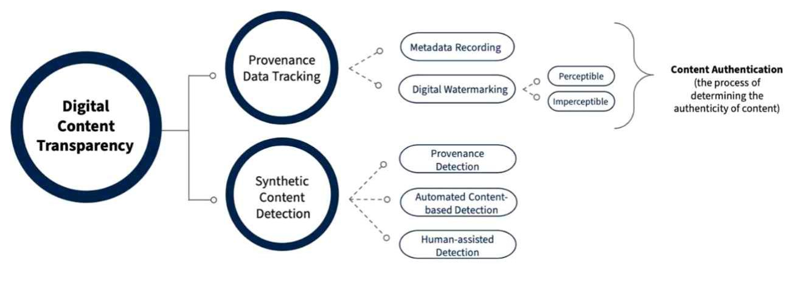
출처: NIST, Reducing Risks Posed by Synthetic Content (2024. 11.)
(1) 메타데이터 기록
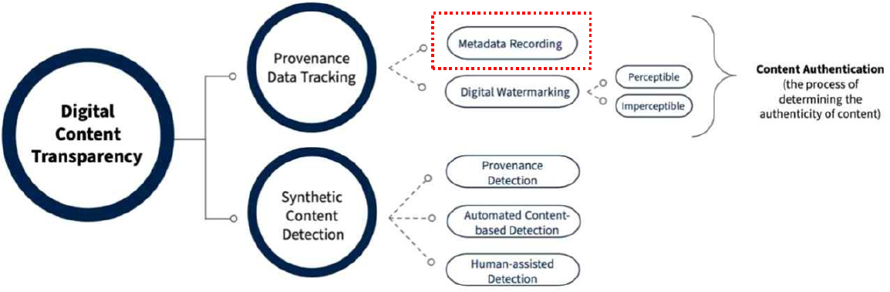
화면만 보고 영상의 진위를 구분할 수 있는가
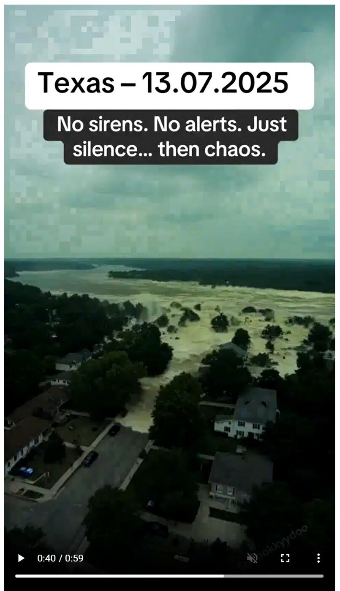
x.com/i/status/1945592812289888425 · bbc.com/news/videos/cn85vlxxxz5o
C2PA (콘텐츠 출처 및 진위 확인 연합)
- C2PA (Coalition for Content Provenance and Authenticity)
- 2021년 Adobe, ARM, BBC, Intel, Microsoft 등이 참여하여 설립
- 디지털 콘텐츠 증명을 위한 신뢰 가능한 공개, 무상의 기술 표준 제정 노력
- 콘텐츠의 출처, 수정 이력, 퍼블리셔 신원 등
- 암호학적 서명 기반의 메타데이터 표준
- 기존 사진의 메타정보(Exif 등)와 달리 위·변조가 된 경우 탐지 가능
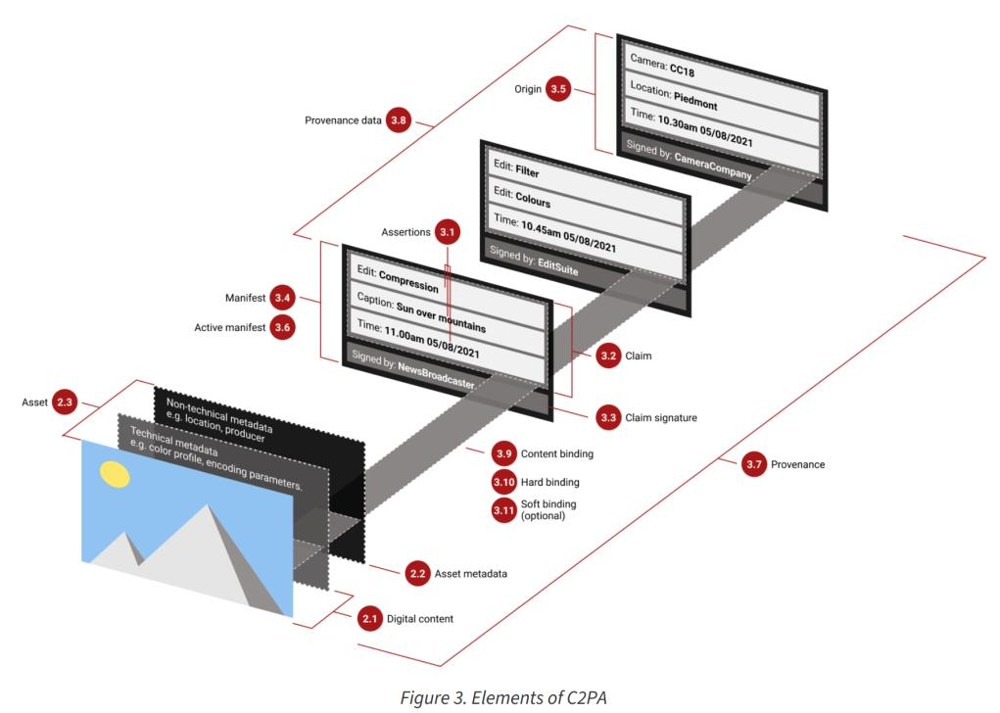
C2PA 표준의 활용
- 이용자들이 손쉽게 사진의 출처 및 진위를 확인할 수 있는 기능 제공
- 출처가 확인되지 않은 콘텐츠의 경우에는 경고 표시
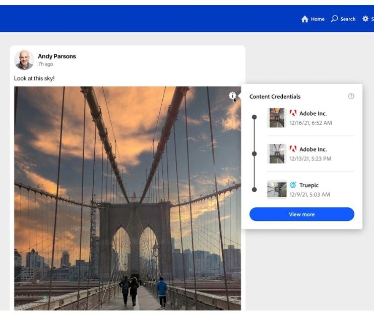
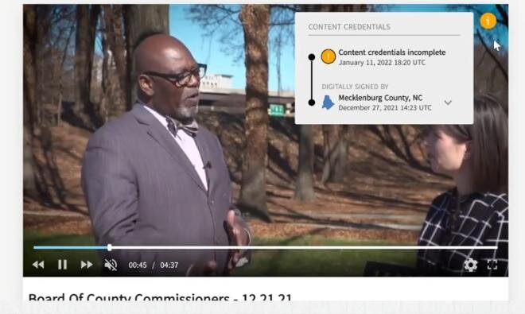
C2PA 기술 활용 사례: BBC
- 2024년 3월 4일 C2PA 기반 “콘텐츠 자격 증명(Content Credentials)” 기술을 처음 뉴스 기사에 적용
- 독자가 미디어의 출처와 편집 이력을 확인해 신뢰 여부를 스스로 판단할 수 있도록 함
- 해당 콘텐츠가 제3자 플랫폼(Facebook 등)에 공유되더라도 출처 확인 가능
bbc.co.uk/rd/blog/2024-03-c2pa-verification-news-journalism-credentials · bbc.com/news/world-latin-america-68462851
(2) 디지털 워터마크
워터마크 분류
- 사람의 인지 여부에 따른 분류
- 인지 가능 워터마크: 육안으로 구분 가능. (예) 로고나 텍스트 등 표시
- 인지 불가능 워터마크: 품질 및 시청각적 경험에 영향을 끼치지 않음. (예) 인지 불가 패턴, 메타데이터 기록 등
국내외 워터마크 도입 현황
과기정통부·TTA, 인공지능(AI) 워터마크 기술 동향 보고서 (2024. 12.)
인지 불가능 워터마크: 구글 SynthID
- 이미지 워터마크
- 이미지 픽셀에 인지 불가능한 패턴을 삽입
- 필터나 압축 등의 파일 조작에도 유지 가능
- 동영상 워터마크
- 디지털 워터마크를 동영상의 각 프레임에 추가
- 텍스트 워터마크
- LLM이 생성한 토큰의 확률 값을 조정하여 워터마크가 없는 텍스트와는 다른 패턴의 텍스트를 생성
- 최소 3문장 이상의 텍스트에서 워터마크 감지 가능
deepmind.google: identifying AI-generated images with SynthID · deepmind.google: watermarking AI-generated text and video with SynthID
현행 워터마크 기술의 한계
- 삭제 용이성(“스크러빙”)
- 인지 가능 워터마크는 손쉽게 삭제 가능
- 인지 불가능 워터마크 역시 여전히 제거에 취약하다는 것이 일관되게 확인됨
- 이미지
- 노이즈를 추가해 워터마크를 파괴한 다음 노이즈를 제거하면 워터마크 없는 이미지 복원 가능
- 정교한 워터마크도 공격자가 검출기를 반복 활용하거나, 대규모 워터마크 데이터셋이 있으면 제거 가능
- 텍스트
- 패러프레이징을 반복하면 검출률을 크게 낮출 수 있음(다만 400단어 이상 긴 텍스트는 강인성 유지)
- 단어 사이에 무의미한 단어 또는 이모티콘을 삽입하면 워터마크가 제거될 수 있음
- 오디오, 비디오: 아직 충분한 연구가 이루어지지 않음
- 워터마크 위·변조(“스푸핑”)
- 워터마크가 없는 콘텐츠를 워터마크가 있는 것처럼 조작하는 행위
- 예시: 특정 AI 모델이 아동성착취물을 생성한 것처럼 조작하여 해당 모델의 평판을 낮추는 공격 가능
- 이미지: 다양한 생성형 AI 워터마크에 대해 스푸핑이 실험적으로 입증됨
- 텍스트: 비워터마크 모델을 이용해 생성한 텍스트로 탐지기를 80% 속이는 데 성공한 사례 존재
- 오디오, 비디오: 아직 충분한 연구가 이루어지지 않음
- 워터마크가 없는 콘텐츠를 워터마크가 있는 것처럼 조작하는 행위
출처: NIST, Reducing Risks Posed by Synthetic Content (2024. 11.)
워터마크의 확장성 문제
- 공격자가 쉽게 회피하거나 스푸핑을 할 수 있음
- 특히 오픈소스 탐지기의 경우 탐지 회피 여부를 무제한으로 시험 가능
- AI 모델 개발자는 현재 각기 다른 고유한 워터마킹 방법을 사용하고 있음 고유의 탐지기 활용
- 비공개 워터마크는 필요한 탐지 알고리즘, 암호키, ML 모델 등이 비공개 개발자로부터 별도 이용 허락 필요
- 비공개 워터마크의 경우 AI 개발자별로 각기 다른 탐지 서비스를 이용해야 함
- 복잡한 워터마크의 경우 검출 비용이 높아져서 비용 부담이 증가
- 각기 다른 워터마크 탐지기 사용법과 결과 해석 방법을 이해해야 하는 교육 부담 존재
출처: NIST, Reducing Risks Posed by Synthetic Content (2024. 11.)
워터마크 도입 방법 비교
- 국내 기업은 인지 가능 워터마크를 도입(2024년 12월 기준)
- 인지 불가능 워터마크는 도입 난이도와 소요 비용이 높음
과기정통부·TTA, 인공지능(AI) 워터마크 기술 동향 보고서 (2024. 12.)
(3) AI 생성물 탐지
AI 생성물 탐지 방법론
- 콘텐츠에 포함된 출처정보(워터마크, 메타데이터)를 이용하여 AI 생성물 여부 확인
- 장래 출처 증빙 메타데이터(예: C2PA 표준을 기반으로 하는 서명·기록 정보 등)가 널리 활용된다면, 해당 데이터가 없는 콘텐츠는 AI 생성물로 의심 가능
- 장점: 탐지 속도가 빠르고 구현이 단순. 명확한 출처 증거 제공 가능
- 한계: 워터마크 탐지 오류(오탐/미탐) 가능성. 메타데이터가 부정확할 수 있음
- 콘텐츠 자체의 통계적, 구조적, 의미적 특징을 분석하여 AI 생성 여부를 판별
- 예시: 이미지의 주파수 스펙트럼 분석, 텍스트의 어휘·문장 구조, 오디오의 스펙트럼 특징 등
- 장점: 메타데이터/워터마크 없이도 탐지 가능. 다양한 콘텐츠 형식에 적용
- 한계: 새로운 생성 모델·후처리 기법이 등장하면 탐지 성능이 저하될 수 있으며, 적대적 회피 공격에 취약
- 생성모델과 탐지 기술 간 군비 경쟁이 계속될 수 있음
- 자동화된 탐지 기술을 분석가·플랫폼 모니터링 팀·전문가 그룹 등의 분석·판단과 결합해 최종 진위를 판별
- 예시: 의심 콘텐츠에 대한 전문가 시각검증(영상 frame-by-frame 분석), 자동 탐지기의 경계 사례(borderline case) 판정
- 장점: 복잡한 맥락, 사회문화적 단서 반영 가능. 자동 탐지가 놓친 신호 포착 가능
- 한계: 시간·비용 소모. 대량 콘텐츠 모니터링에는 확장성 제한
딥페이크 탐지 기술 현황 (1)
- Deepfake-Eval-2024 (Chandra et al., 2025)
- 데이터셋: 2024년 온라인에서 수집한 딥페이크 데이터. 45시간 비디오, 56.5시간 오디오, 1,975건 이미지
- 오픈소스 탐지 모델은 실제 데이터 적용 시 성능이 급격히 하락
- 이전 벤치마크 대비 AUC 점수가 비디오 모델 50%, 오디오 모델 48%, 이미지 모델 45% 감소
- 상용 딥페이크 탐지 모델은 오픈소스 모델보다 우수하지만, 딥페이크 포렌식 분석가의 정확도에 미치지 못함
딥페이크 탐지 기술 현황 (2)
- Evaluating Deepfake Detectors in the Wild (Pirogov et al., 2025)
- 최신 딥페이크 생성 기법을 사용해 50만 개 이상의 고품질 딥페이크 이미지를 제작
- 공개된 최신 딥페이크 탐지 모델들을 평가한 결과 절반 이하의 모델만이 AUC 60% 이상, 최저는 50% 수준
- 간단한 이미지 조작(JPEG 압축, 이미지 보정 등)만으로도 탐지 성능이 크게 하락함
- 실제 환경에서의 딥페이크 탐지는 여전히 미해결 과제
딥페이크 대응 정책
기술만으로는 해결되지 않는다. 콘텐츠가 배포되는 단계에서 플랫폼이 무엇을 해야 하는지를 본다.
콘텐츠 배포 플랫폼의 자발적 조치
- 크리에이터가 자발적으로 인공지능 생성물을 표시하도록 유도
- 예시: 유튜브는 변경되었거나 합성된 콘텐츠 공개 의무화
- 콘텐츠 변형 및 합성 여부 공개 위반을 지속적으로 하는 경우 콘텐츠 삭제, 유튜브 파트너 프로그램 정지 등 제재 부과
콘텐츠 배포 단계의 중요성
- “주목 경제(attention economy)” 시대
- 이미 인간에 의해서도 매우 많은 콘텐츠가 생성되고 있음
- 한정된 이용자들의 “주목”을 얻기 위한 막대한 경쟁이 진행되고 있음
- AI 콘텐츠의 생성 가능성 ≠ 사람들의 주목을 얻을 가능성
- 이미 수년 전부터 GPT-J와 같은 공개된 대규모 언어모형이 존재했으나, 이로 인해 허위조작정보 위험이 증가했다는 증거는 없음 (Narayanan & Kapoor, 2023. 3. 7.)
- AI 생성 콘텐츠의 영향은 콘텐츠 유통 플랫폼에 의해 상당 부분 좌우
- 2023. 5. 22. 펜타곤 폭발 사진 유포 사건
- 트위터 유료 인증을 받은 “Bloomberg Feed” 계정에 올라온 사진
- 트위터 계정 유료 인증 방식의 문제점을 드러냄
- 콘텐츠 유통 플랫폼의 허위조작 사진 판별 기능 부재 문제 + 이에 대한 투자 인센티브의 결여 문제
- 2023. 5. 22. 펜타곤 폭발 사진 유포 사건
aisnakeoil.substack.com/p/the-llama-is-out-of-the-bag-should · bloomberg.com/news/articles/2023-04-20/deepfake-detection-is-one-corner-of-ai-tech-that-isn-t-booming
AI에 기반한 여론 조작의 단계
+
이용자 신념 형성
주목 필요
모델 구축과 콘텐츠 생성 단계가 아니라, 배포와 신념 형성 단계가 여론 조작의 성패를 좌우한다.
Goldstein et al. (2023), arxiv.org/abs/2301.04246
“Borderline Content” 문제의 극복
법적 규율 사례: EU Digital Services Act
- Digital Services Act (DSA) 현황
- 2022. 11. 16. 시행
- 2023. 4. 25. 대규모 온라인 플랫폼 17개, 대규모 온라인 검색엔진 2곳 지정(이용자 수 4,500만 명 이상)
- 대규모 온라인 플랫폼(VLOPs): Alibaba AliExpress, Amazon Store, Apple AppStore, Booking.com, Facebook, Google Play, Google Maps, Google Shopping, Instagram, LinkedIn, Pinterest, Snapchat, TikTok, Twitter, Wikipedia, YouTube, Zalando
- 대규모 온라인 검색엔진(VLOSEs): Bing, Google Search
- 2023. 12. 19. 대규모 온라인 플랫폼 3곳(성인물 사업자) 추가 지정: Pornhub, Stripchat, XVideos
- AI 생성 콘텐츠 관련 대규모 온라인 플랫폼의 DSA상 의무
- 제34조 위험 평가
- 불법 콘텐츠의 배포
- 기본권 침해 위험(인간 존엄성, 사생활의 자유, 표현 및 정보의 자유, 차별 금지, 아동의 권리, 소비자 보호 등)
- 시민 담론, 선거 절차 및 안보에의 부정적 영향
- 성폭력, 공중보건 및 미성년자 보호, 신체 및 정신 건강
- 제35조 위험 완화 조치 의무
- 제1항 (k) 딥페이크 표시 의무를 포함: 실존하는 사람, 물체, 장소, 단체나 사건과 눈에 띄게 닮아서 진짜처럼 보이는 생성·조작된 이미지, 오디오, 비디오를 온라인 인터페이스에서 눈에 띄는 표식으로 구분할 수 있게 하고, 이용자가 해당 정보를 표시할 수 있는 사용하기 쉬운 기능을 제공
- 제52조: 위반 시 전세계 연간 매출액의 6% 이하의 과징금 부과 가능
- 제34조 위험 평가
정책적 과제
- 이용자가 딥페이크임을 손쉽게 알 수 있는 콘텐츠 소비 환경 구축
- C2PA 등을 활용하여 진정한 콘텐츠 여부를 손쉽게 확인할 수 있는 표시 부착 장려
- 딥페이크 생성물일 경우 경고창을 먼저 표시하고 이용자가 동의해야 표시
- 콘텐츠 배포 플랫폼의 특성을 고려한 정책 방안
| 대상 | 조치 |
|---|---|
| 모든 플랫폼 | 크리에이터/게시자가 AI 생성물임을 표시. 약관 위반 시 비례적 제재 |
| 일정 규모 이상의 숏폼 콘텐츠 배포자 | 업로드 시 AI 생성물 확인(워터마크, 메타데이터 + 탐지) 및 경고 기능 |
| 일정 규모 이상의 온라인 커뮤니티 | 게시판 운영자에 의한 인간 탐지 및 감독 |
| 대화 참여자 수 일정 규모 이상의 오픈 대화방 | 자동화된 기술에 의한 콘텐츠 안전 보장 |
기말 발표 준비: 내 AI 서비스의 지식재산권 점검
| 단계 | 점검할 질문 | 관련 내용 |
|---|---|---|
| 데이터 수집 | 스크래핑하거나 RAG에 넣은 자료의 권리자는 누구인가. 이용약관과 robots.txt가 수집을 금지하는가. 데이터베이스의 상당한 부분을 반복적, 체계적으로 가져오는가 | 복제권, DB권 (Section 1) |
| 모델과 API | 사용하는 모델 제공자의 약관에서 입력 데이터와 출력물의 권리 귀속, IP 면책 범위와 제외 사유는 무엇인가 | 면책 조항 (Section 4) |
| 출력물 | 서비스가 원문을 길게 그대로 출력하는가. 출처를 표시하는가. 캐릭터, 유명인의 초상·음성, 특정 작가 이름을 프롬프트로 받는가 | 암기, 캐릭터, 퍼블리시티권, 성과도용 (Section 3) |
| 결과물의 보호 | 서비스가 만든 결과물과 내가 AI로 만든 코드·콘텐츠 중 저작권으로 보호되는 부분은 어디인가. 사람의 기여를 기록하고 있는가 | 인간 저작자 요건, 등록 안내서 (Section 5) |
14·15강 기말 발표의 “법적 쟁점” 부분에서 위 항목 가운데 자신의 서비스에 해당하는 것이 있는지 확인
12강 정리
- 학습 데이터의 수집크롤링한 데이터를 저장하면 복제가 일어난다. 저작물이 아닌 정보도 반복적, 체계적으로 가져오면 DB권 침해가 될 수 있다. AI 개발자는 공정이용으로 항변한다
- AI 학습과 공정이용Bartz 판결은 학습을 공정이용으로 보되 불법 복제물 취득은 침해로 보았다. GEMA 판결은 모델 내 암기를 복제로 보았고, Getty 영국 판결은 모델을 침해복제물로 보지 않았다
- 데이터 시장학습 데이터 확보 경쟁 속에서 라이선스 계약이 늘고 있다. 권리자 보호와 AI 혁신의 절충 방안으로 데이터 거래 시장이 논의된다
- 생성물에 의한 침해암기와 캐릭터는 복제권, 초상·음성은 퍼블리시티권(부정경쟁방지법 타목), 스타일은 성과도용(파목) 여부가 문제 된다
- 사업자의 대응중복 제거와 출력 필터 같은 기술적 조치, 권리가 확보된 데이터만으로 학습, 기업 고객에 대한 IP 면책
- AI 창작물의 보호사람의 관여 없는 AI 산출물은 저작물이 아니다(Thaler 확정). 프롬프트만으로는 부족하고, 사람이 수정, 선택, 배열한 부분에 한하여 등록된다
- 딥페이크와 콘텐츠 투명성메타데이터 기록(C2PA), 워터마크, AI 생성물 탐지의 세 접근이 있다. 워터마크는 삭제와 위조에 취약하고, 탐지 모델은 실제 환경에서 성능이 크게 떨어진다
- 딥페이크 대응 정책생성 가능성보다 배포 단계가 영향을 좌우한다. 플랫폼의 표시 정책, EU DSA의 위험 평가와 완화 의무, 플랫폼 특성별 조치가 과제이다